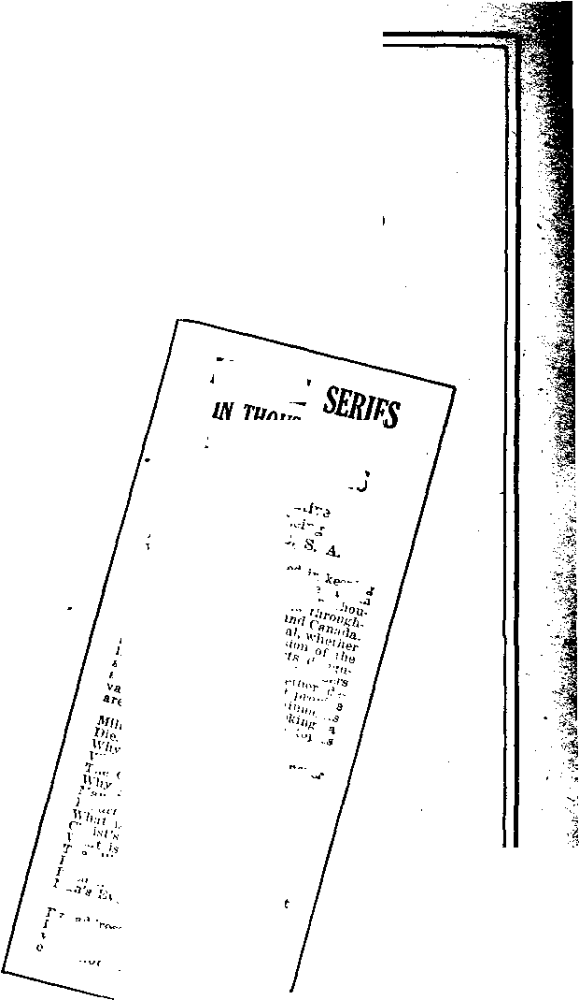

A-JOURNAL-OF - FACT - HOPE-ANO’CONVlCllON
July 19,1922, Vol. Ill, No. 74
■SB Published every other IVjfil week at IS Concord Street, \Jjr Brooklyn, N. F., V. S. A.
Five Cent* a Copy—$1.00 a Year
Canada and Foreign Countries, }l.&0
Volume. 3 WEDNESDAY, JULY ID, 1922 NUMB1B 74
CONTENTS at the GOLDEN AGE
FINANCE—COMMERCE—TRANSPORTATION
Spirit Money ....... 643
Dur Loss ol Commerce ____________________________________________________________618
POLITICAL__DOMESTIC AND FOREIGN
A Thesis '»n Hunmn Rights 6 19 Mo mon Errors Exposed 65 I Oath of Disloyalty . .651
Another ChuMi in Politics 652 Christians Tornired under
Satan’s Empire ______________653
In Prison
Sake ...
for
653
agriculture and husbandry
Economy in Milk and Hutter ITmliirtiun
HOME AND HEALTH
Purifying 1 he Bb»od ------------—.......................................
Human Body Needs Mineral Salts-; ....... ....657
Human J '.oily Needs
658
RELIGION AND PHILOSOPHY
Eightoenlh Amm id rich t
Foretold ............-............652
Jmisjbk* Malignajiry ........c 13
General J’el ir I in Spiritism 6 17 l)emon-l usf-ired Thmiglris fi LS
Church Alliance with Big
A Thousand-Year Drunk 661
The Two Aspci-’s of Trior 6-/5 True is, 1-511 st• IP'ligititi . (i<.>5 S;d:er< vs. Sword of (hr
Tin- S : > i ri I '■!' I ,j I’c ..
Chf i<l i i ri Science vs. Tdlilr
The ItoNiH’rei'lbm of .b'>i.e
'■I Was a Stranger and 670 fchiid'es in the “Harp of
published «rery other Wednesday at 18 Concord Street. Brooklyn, N. Y......U. 8. A.
by WOODWORTH, IlDDfiTNGS and MARTIN CLAYTON J. WOODWORTH.......Editor
ROBERT J. MARTIN .... Business Manager JVM. F. HUDOINGS......Secy and Treas.
Copartners and prnp’ietnr?, Address: 18 Concord Street, Brooklyn. NY...... L’. S. A. Five Cents a Copy — $1.00 a Year foreign offices : British : 34 Craven Terrace, Lancaster Gate, London W. 2; Canadian: 270 Dundas St. W.« Toronto, Ontario; Australasian: 405 Collins St., Melbourne, Australia. Make remittances to The Golden Entered ba second-filan matter at Brooklyn. N. X.
VDder the Act of March 8, 1879.
Volume III
Brooklyn, N. Y., Wednesday, July 19, 1922
Number 74
Invisible Malignancy By 0. L. Rosenkrans, Jr.
WHENEVER our forefathers were confronted with some strange and unfamiliar circumstance, some deflection from the current of their ordinary experience, they were prone to unhesitatingly pronounce it to be a manifestation of the supernatural. The contemporary mind, being strongly prejudiced against any interpretation of the mysterious not based on science, despises the opinions of antiquity as ignorant superstition. We are more enlightened concerning the laws of nature and found our faith on tangible evidence rather than on fanciful conjecture.
MYSTERIOUS STRUCTURES
Nevertheless, in spite of its exhaustive researches, there remain mysteries of nature which science is not yet able satisfactorily to explain. For instance, in the Peruvian highlands there are ruins of ancient cities constructed of such enormous blocks of stone that it would tax the resources of a modern engineer to set them into place. There is no rock like this in the vicinity; so the blocks must have been quarried many miles away, and moved to their present sites across a rough mountain region intersected with yawning chasms. It seems incredible that a primitive people with their rude appliances should have been able to accomplish the feat. One traveler ingeniously suggested that perhaps the ancient builders were acquainted with some long-forgotten secret of nullifying the law of gravitation and transporting the blocks through the air. This is a power which magicians have often claimed to exercise, but at which modern science scoffs.
The belief in magic arts was once well-nigh universal, even today being unquestioned among ignorant and barbarous nations. This belief was prevalent both in pagan antiquity and in medieval ecclesiasticism. The former tacitly sanctioned it; but the latter anathematized any miracle-working except that of “holy” images, pictures, and relics. Magic yet persists in India and China, and is a prominent feature in the customs of Congo natives and American aborigines. The remark is often made that the familiar circumstances of our every-day civilized life would appall and disconcert dur ancestors, appearing to them as magic; that our horseless vehicles, radiophones, and airships would probably stupefy and bewilder them to the point of mental derangement; that their mental processes could not adjust themselves to our point of view. But contemporary experience seems to refute this assumption; for after a very brief contact with the white man, the rudest savages readily accustom themselves to his inventions, and appreciate the advantages of many of them. In East Africa a motley crowd of witch-hunters and erstwhile slaveraiders throng the railroad coaches and the picture shows. A pioneer explorer with a bottle of magnesia may pose as a powerful wizard, but his successors must sustain their reputations with pocket flash-lights and phonographs. Familiarity makes the white man’s magic commonplace; so the same Chinese comprador who is nervous about feng-sli/ui learns nonchalently to punch a typewriter or to drive an automobile. Likewise, too, the sophisticated Pullman porter conceals a rabbit-foot in his pocket or brings suit against an enemy for “burying his photograph.”
A strange anomaly in our enlightened age is the persistence of lucky charms and evil omens. However, educated people are not so prone as yesterday to be dismayed by a chance glimpse of the new moon over the left shoulder; tea-cup auguries are out of fashion; garden planting according to the phases of the moon has fallen into disrepute. Ghost stories and fairy tricks are reserved for very young children. Curiosity concerning the supernatural is gratified by “psychic” experiments and by the analysis of the “suppressed instincts.”
MAGIC ART
But neither psychic experience nor the subconscious action of our ruling instincts satisfactorily accounts for such marvels as the feats of Hindu jugglers, the “magic mirrors” of medicine men, the fulfillment of rain-makers’ predictions, soothsaying, the snake-dance of the, Mo-quis, the fire-dance and the feather-dance of the Navajos, the hot-stone ceremony of Fijians, and the like. During the war an international convention of prestidigitateurs discussed the standardizing of their tricks; but no agreement was reached because the Orientals positively refused to divulge their hereditary professional secrets, which the Europeans could neither explain nor duplicate, though the former employed only the simplest kind of equipment.
The heathen jugglers indeed regard their magic as a religious rite. The Zuni shaman, while seated in a darkened room, closely surrounded by spectators, conjures up an artificial thunderstorm inside while all is clear and starlit out of doors. In the blackness of the interior his mummeries cause a miniature sun to rise, ascend to the ceiling, and set on the opposite wall. At sunrise he plants a kernel of corn, and by his singing makes it grow into a mature stock with ripened ears by sunset. When he pauses in his singing, the plant stops growing until he resumes again. In full view of his audience he apparently turns himself into a coyote and then back into a man.
BASED ON SPIRITISM
These wonders are all attested to by reliable witnesses; and the only plausible explanation, that of hypnosis, has been rejected as under the circumstances absurd. The shaman’s frank admission is that he invoked the aid of spirits, a power which his “medicine” confers. To the savage there is no blind chance in nature. Everything is sentient; every influence is the work of good or evil spirits. So spiritism would seem to offer the only valid explanation of the shaman’s magic, so baffling to science.
Every heathen religion is based on spiritism. The oldest one open to investigation is that of the Sumerians, who inhabited the lower Tigro-Euphrates valley at the dawn of history. Their religion was, primarily, demon propitiation. They filled the unseen with hordes of malevolent beings, the authors of all sorrow, sickness, misfortune, mental perturbation; and their inimical designs must be averted with charms, magic draughts, and exorcism. Even household furniture was fashioned with a talismanic value. Besides these nameless myriads, there were the dog-headed fiend of the southwest wind, bringer of drought and famine, and the seven Maskim, who dwelt in the bottomless hollow under the earth’s crust but whose awesome voices resounded in the heavens, who delighted in tempests, earthquakes, and inundations. Over all was the supreme spirit, En-lil, whose name is interpreted “Chief of Spirits.” With him were associated in a triad Anna, spirit of heaven, and Enki, spirit of earth. .
Subsequently in Babylonia this triad became Anu, Ea, and Bel, the gods of heaven and earth and the “prince of the spirits.”
At an early date astrology was combined with demonism; and the seven wandering planets became gods whose friendly influence was believed to counteract the malice of the spirits. Most of these gods bore a title which meant “Lord of Spirits,” and with their worship the serpent is associated as the symbol of wisdom and fecundity. . •
PAGAN IMMORTALITY
The foundation of heathen religion is the' concept of the immortality of the soul. The Babylonian conception of the earth as an inverted bowl, the hollow interior constituting the dark realm of Queen Ninkigal, who corresponds to the Persephone of the Greeks. Here was the abode of the demons and of the souls of the dead, who dwelt in sadness, feeding on dust and slime, and racked with diseases. The Babylonians cremated their dead and kept the ashes in jars, around which hovered the zi, or shadow of the soul, to receive nourishment from “deadofferings.” The zi was the exact equivalent of the Egyptian ka, which the pious descendants appeased also with food offerings, and some-1 times with pictures of food painted on the walls of tombs.
The Egyptians supposed that the ba, or soul, performed a long perilous journey to the “Land of Double Truth,” where Osiris, the perfect judge, weighed its virtues and its sins in a balance. If the good preponderated, the soul was admitted into a heavenly counterpart of the Nile valley. If the judgment was unfavorable, the guilty soul passed to the torments of hell or else entered the body of an animal to undergo a new probation. To protect the soul on its journey from the evil spirits that beset its path, it was fortified with charms and amulets.
This parallels the Chinese funeral custom of burning “spirit money” to pay tolls and to bribe the soul’s persecutors. The Chinese mourners sometimes laboriously revolve a kind of paper capstan, the turning of which is supposed to facilitate the soul’s progress. Among the Pueblos the shaman builds a smudge, upon which he traces false trails to perplex the witches so that they will not discover the departing spirit and pounce upon it to drag it off to the “accursed land.” Our practice of smoking tobacco originated among the Indians as a magic rite calculated to disperse the hovering spirits during religious rites; but the Indians were sensible enough to taboo its use to women and boys.
'f-
5.
A VAGUE HEREAFTER .
The Greeks and the Romans entertained rather vague notions respecting the hereafter, But in general they supposed that the souls of the deceased spent a shadowy, dream-like existence below the earth in the dominion of Pluto, or Hades—a mere reflection of the vital, joyous life on earth. Though these manes of the t departed abode in hell, it was thought possible, by performing the proper sacrifices, to call them up. Besides these, innumerable legions of invisible beings, called dcemones by the Greeks and genii by the Romans, were believed in. These were the souls of that wicked race of men swept off by Zeus in a cataclysm at the end of the “Silver Age.” Another class of dcemones were assigned as guardian spirits over humanity-one to each individual. These were mortal, and expired at the death of their charges; so it was held to be disloyalty to one’s daemon to be reckless and foolhardy. At banquets it was customary to spill a little wine in libation to one’s Agathodaemon, or “good spirit,” whose symbol i was usually the serpent.
All heathenism is entangled with snake-worship, and most savages regard serpents with superstitious reverence. Some, like the Zulus, imagine that their ancestors are reincarnated as serpents. In India there exists such a strong prejudice against killing even venomous ophidians that the annual mortality from snakebite is very high. The early Irish sculptures and illuminated manuscripts are ornamented with twining serpents; and St. Patrick’s expulsion of the reptiles is supposed to symbolize the overthrow of heathenism. Naga, or snake-worship, is still a feature of Hinduism. The Aztec pantheon of gods mostly bore names indicating snake-worship. Cihuacohuatl is the “woman serpent"; Coatlicue, the “serpent-skirted” goddess of flowers; Mixcoati, the “cloudy serpent”; Tlaloc, the rain-god, flourishes a serpent for a thunder bolt; Huitzilopochtli, the war-god, held a serpent torch for a sceptre; Quetzalcoatl, the “feathered serpent,” god of the atmosphere, is identified with Dumuzi, Horus, Tammuz, Adonis, Sossioch — various personifications of the “False Messiah.”
In Roman mythology, the genii of good people watched over the household as the kindly Lares and Penates. Those of evil-doers roamed about as fiendish Lemures and Larvae, afflicting mankind with sickness. Ancient writers, both pagan and Christian, make frequent reference to these evil spirits and to the deceptions which they practised. Lactantius, tutor of Constantine, describes them as beings originally deputed by God for the guardianship of mankind, but perverted to be its scourge. To lead men astray from the worship of the true God, they continued the pretense of benevolent protection, receiving the grateful adoration of their dupes. Clement of Alexandria ascribes to the demons the inventipns of astrology, palmistry, soothsaying, the oracles, etc. To lay snares for the living they impersonated the dead or the gods, appearing in dreams and visions. Through their superhuman agency, statues were made to bow or to bleed or to sweat; and they inspired the enigmatical utterances of the Delphic Pythoness. They instigated men to parricide, suicide, and every other atrocious crime, or else drove them into insanity.
During medieval centuries the belief in ghosts was not sanctioned by Roman ecclesiasticism; else purgatory had not been such a sound finan-
. the GOLDEN AGE
cial proposition. In spite of this fact the ignorant multitude adhered to the legacy left them by their heathen progenitors — the specters, vampires, werewolves, elves, hobgoblins, and gnomes — contriving to reconcile the same with their orthodoxy. In fact, the laity were indulged in these superstitions, wherein “Mother Church” found its advantage in preoccupying the popular mind with a spell of terror, thereby insuring its submissiveness.
HEATHEN CREEDS ALIKE
There is a striking similarity between much of the doctrine of all heathen creeds; since all, being offshoots of Mystic Babylon, mother of all false religion, present parallel features. The fire-worshiping Persians declared that man in this world is given free will to choose either good or evil; but that he is incessantly tempted into wrong-doing day and night by the wicked demons. So when he dies, his soul, essaying to cross the bridge Chinevat to the mansions of the blest, is liable to be so weighted down by the burden of its misdeeds that it loses its balance and falls down into the frightful gulf Duzahk, where it is tormented continually by Ahriman, king of darkness, and his wicked demons until the last day, when all things—even the devils— will be purified with fire and regenerated.
In the Koran the bridge is called El Sirat— sharp as a scimetar’s edge. The demons are Djinns and Afrites, who harass the souls of people already predestined by the careless decision of an indifferent Allah, to either Paradise or Jehannum.
Hinduism recognizes the demons as beings in a higher plane of vibration than the human and therefore invisible to us. But an adept, by practising Samadhi, or perfect concentration of the faculties, is able to rise to the demons’ state of swifter vibration and to command their obedience. Every human being must animate in succession eighty-four million bodies; but if one’s Karma is favorable, reincarnation may occur in a deva, or demigod. The demons are countless in number, and are apt to retain their previous malicious propensities with enhanced powers to do mischief; so they are dreaded by the multitude, who worship them with greater fervor than they do the three hundred thirty millions gods, whose pantheon is balanced by this vast pandemonium. ' '
The prosaic Chinese nevertheless devote a considerable portion of their time and pecuniary resources to the conciliating of ghosts and devils, whose disposition to meddle in all their daily affairs is the source bf perpetual embarrassment to them. The spirits are always eager to renew their vitality by sapping the health of the living; so the magician’s services are in constant demand to frustrate them. In extreme cases recourse is had to Chang-tien-tzi in Kwang-si, who has control over spirits and who keeps recalcitrant ones corked up in bottles sealed by a magic formula. Credulous visitors are allowed to listen to the querulous twittering of the imprisoned sprites.
SPIRIT MONEY
Kwei are the souls of people, who die of starvation, whose presence in hell is so obnoxious to the other shades that the latter drive them back to earth to haunt the living. They resemble corporeal humanity except for the absence of shadows. According to popular belief there is a city in Szetchuen containing a “Street of the Dead,” where ghosts live on one side and live people on the other. Sometimes a man disappears and is officially pronounced dead. If he returns to his friends, the latter receive him as a kwei. His predicament is now desperate; for whether he engages in business, works for wages, or asks an alms, he is given “spirit money,” which is not legal tender. His sole escape from starvation is to live precariously on the “dead offerings” on the tombs. Kiang-Shi are souls whose bodies did not decompose after their decease. They are believed to emerge from their graves at night to dog the footsteps of belated travelers, waiting for a chance to leap on them and devour them.
The hill-dwelling Nubas of the Sudan are an example of a veritable demonocracy where the spirits exercise direct government over the tribe. Bail is the chief spirit, dwelling on earth, but supreme everywhere as the giver of life and death and the director of destiny. He deputizes the guardianship of mankind to lesser spirits called Arros, who are the souls of early fathers of the tribe. Each village is ruled by an invisible arro, or tutelary spirit, who makes his will known through a priesthood and especially through the Kugur, or high priest, who is his apotheosis. When a Kugur dies, the arro selects a successor by throwing him into « trance and, summoning the tribe by his yella,
E".- uses him for a mouthpiece. The Nubas expect the hereafter to duplicate tribal Efe on earth, with cattle and villages; only there will be no t children born and no sin; for all sins are exI, piated by bad luck in this life.
~ GENERAL BELIEF IN SPIRITISM
From the foregoing it is apparent how widespread has been, and is yet among a vast ma? jority' of the human race, the belief in invisible beings potent in their influence to affect human ' , welfare. Modern rationalism condemns all spir-?? itist phenomena as superstition, or else tries to account for it by “psychic 18ws.” The latter are recognized as legitimate science and based on * the duality of the consciousness. We are sups' posed to have an “objective mind,” or boss of our personality, and an irresponsible “subjective mind,” with enormous latent potentialities ' but so susceptible to all manner of suggestions as to be a perpetual danger to ourself. Our [ only safety lies in rigorously controlling it ■- - through the power of the will, which functions I? in'the cerebellum. So we are urged to < levelop diligently the cerebellum and the medulla oblongata. But a new school has arisen which informs us that it is all in vain — sheer waste of j effort, in fact — because our wills are power-r less to dominate the ruling instincts of our “animal mind,” which as “suppressed impulses” f - color all our motives, disguising themselves so
‘ artfully that they gain their ends in spite of | our best intentions.
■j. The truth is that our minds are open to an * infinite variety of suggestions, some of which we can account for, and some of which are mys-jr terious. Some are from forgotten incidents in g our past life, matters which we have transiently € noticed and supposedly dismissed from our minds. Others are inspired by casual sights or sounds that involuntarily link up associated | ’ trains of ideas. Some may possibly be ancestral memories or prenatal suggestions. But at times f we receive suggestions so utterly foreign to ? anything connected with our conscious experi-£ ence that the only plausible explanation is that I' they are direct communications from invisible | agencies. ,
B DEMON-INSPIRED THOUGHTS
fc- We are accustomed to refer to the “imagina-p tion”; and the bulk of what we imagine is evil.
Everyone is more or less susceptible to unwelcome fancies that suddenly spring into the mind and are difficult to expel, and that being rebuked return in an unguarded moment, and lurk and hint and tempt, and wear out the patience with their nagging. They remind us of past slips and follies and humiliations; they mock our hopes and deprecate our faith; they gibe at our distresses and preach despair to us out of our own experience; they try to bewilder us in our extremity and to lure us onto wrong trails by false promises of happiness. If that is the action of our subconscious mind, the same is little less than diabolic.
THE BIBLE EXPLANATION
To the believer in the Bible there need be nothing mysterious or improbable in spiritism. Every phase of heathenism would persuade us that the spirits are the souls of the dead, in death "more alive than ever” and with enhanced powers of wickedness. The Bible, on the contrary, assures us that the dead are unconscious and will remain so until the resurrection. The malicious, invisible spirits are the fallen angels, the guardians of mankind in the antediluvian world, corrupted by man’s pernicious example, and therefore hating man as the author of their downfall. But this explanation is too simple and obvious to be accepted by the scientific mind, which refuses to acknowledge any’wis-doni in the testimony of the inspired Scriptures.
In thesc last days the malignancy of the invisible influences is augmented a thousandfold. Their time is short, and they are permitted increased liberty for a test. Throughout the earth the effects are apparent in a growing lawlessness, a breaking down of traditional moral standards, a callous disregard for the rights of others. Soon a reign of unchecked evil will be inaugurated unparalleled in human annals. “Except these days should be shortened, there -should no flesh be saved.” Fortunately, they will be shortened; and in the ensuing kingdom mankind will have peace, exposed no longer to the suggestions from invisible malignancy.
[Ed. Note.—For a more complete exposition of the “devil religion” we recommend our readers to a careful reading of the book “Can the Living Talk with the Dead?”, obtainable at this office for 25 cents.] ' ■
Our Loss of Commerce By a Retired Officer
T) EFORE the civil war our merchant ships were seen in every sea, and many of the sailing ships paid for themselves in their first . voyage. They were manned by American officers (often the owners), but by mixed crews. In 1793 the French preyed on our fleet, exacting tribute in payment for our failure to make good a treaty, and nearly depleted our merchant marine; but after we fought and beat them off, they turned to the so-called Spoliation Claims, aH of which we have now paid. The destruction and ransoming of our vessels by the Confederate cruisers did them less damage than has the Labor Union.
The Pacific Mail Steam Ship Company,which had plied on the Pacific for more than half a century, was employing Chinese firemen, deckhands and stewards, who were not “union men” and who worked for living wages. But by some interpretation of the labor law the Company was no longer at liberty to employ them, and , the rate of wages established by that “government within a government” (the Federation of Labor) was so great as to destroy the profits of the S. S. Co.; and they so represented it to Congress, asking either relief from the rules of the Union or that they be given a subsidy, and dedared they would be obliged to go out of business unless relief was afforded. No action was taken; and the Pacific Mail S. S. Co. sold its ships to the Japanese, who are now running them on the old routes under the Japanese flag.
When the war with Spain came on we had no ships for the transportation of soldiers; but fortunately, a friendly nation sold us what we needed. And when the war with Germany came, we were again in the market for ships, and found relief in the same ■tfay.
This was probably the origin of the Shipping Board, which has cost the nation money running into the billions, and which has. produced in great numbers ships which are moored in the streams, without purchasers or without crews. The “wooden ships” were iron-fastened, which
ERRATA — G. A. Number 69
Page 502, paragraph 7, line 14: Insert after “matter”: “At the end of a cycle, before a new universe is created, all matter and force resolve again into the original Akasa and Prana.”
Page 505, paragraph 3, line 13, “to this book” should read “to the book of Daniel”; paragraph
forbade sheathing; and thereto"} they could be used in the West Indies nor anywhere ela»-where the Toredo exists. It has been suggested to use them for pontoons. They would proba-: bly find purchasers very readily if the owners 7. were at liberty to employ crews without the in-, i terference of the Federation of Labor. Here is where the commonwealth is between the upper ” and the nether millstone. 1:
The money earned in the carrying trade goes into the coffers of the owners, and incidentallyj to the commonwealth. The ships moored in the stream are producing nothing, and the money invested in them is idle.
Is there some reason for this? What is it? It is so plain that it is hardly debatable. But what is the remedy? Are we not cutting off our resources, and at the same time, giving money by the millions to foreigners ? Are we not losing at both ends of the Treasury?
* -5
A public document, entitled “Laws of the Sixty-fifth, Sixty-sixth and Sixty-seventh Congresses, relating to insurance” which carries salaried offices, a whole Bureau, with office rooms, clerks, « etc., has for its purpose the relief of this condition, which will probably have to be put to an experiment. It begins: “Whereas : The foreign > commerce of the United States is now greatly impeded and endangered through the absence ci. “.3 adequate facilities for the insurance of American vessels against the risks of war, and: . . .” %
It seems to the writer that had steps been 7"^ taken to protect the last American trans-Pacific Steam Ship Company, there might have been something to insure; but what is the use of ere-. .Ji ating additional offices, making appropriations!, etc., to insure the personnel and material of a jg? fleet which does not exist?
Do not most insurance companies take >yar risks? Has there been any trouble with them? Will not the cost of the War-Risk Bureau be greater than the subsidy asked by the late P. M. S. S. Co.?
8, line 7, “leader” should be “Healer”. Page 506, - s paragraph 1, line 8, “God with us” should read, “God within us”. Page 507, paragraph 4, line 1 6,“chemists” should be “alienists”; paragraph 5, , line 18, “creature” should be “creatures.” Page 510, paragraph 2, line 3, “lunatics” should be" > “heretics”. '
648
IN 1776 a group of men met together and drew up a document, in the preamble of which they
Stated: '
“We hold these truths to be self-evident, that all men are created equal; that they are endowed by their Creator with certain inalienable rights; that among these are life, liberty and the pursuit of happiness.” •
Many persons in reading this document think that these three are the only rights that we have. But mark you that the Revolutionary fathers said: “Among these are,” clearly indicating the existence of other rights, which by inference would also appear to be inalienable. It is unfortunate that these unmentioned rights were not also specified and set forth in the document.
' I.—LIFE
But some say: “You surrendered those rights when you entered society.” When did we enter society? Was it not when we were born? Then we must have had those rights prior to birth, in order to have delegated them to society; and if we possessed them prior to birth, in what way did we exercise them? Or if we did not exercise those rights, prior to birth, when we had them, what was the use of our having them?
But let us examine these three rights which are recognized in the immortal document. First, life. Shakespeare in his “Merchant of Venice” puts these truthful words into the mouth of Shylock: “Thou dost take my house when thou dost take the prop which doth sustain it.”Would it not seem reasonable that if we have the guarantee of life, we should also have the guarantee of the means to sustain life? And how can we sustain life except by labo”? Therefore we should have the right to work. But with the invention of the machine and the private ownership of the tools of production, that right has been abridged. We do not have the right to work except when it is profitable to the capitalist class for us to work. This leads us to the inevitable conclusion that the tools of production should be socially owned and democratically managed in the interests of all.
II.-LIBERTY
Next let us consider the second of these recognized rights—liberty. To my mind, it means far more than to be on the sunny side of stone walls and iron bars. It has a two-fold application, viz., to the body and to the mind.
In Comer vb. Knowles, 17 Kansas 436, it is said: “It
649
is not necessary that the individual be confined within a prison or within walls; or that he be assaulted or even touched. It is not necessary that there should be any injury done to'the individual’s person, or to his character, or reputation. Nor is it necessary that the wrongful act be committed with malice, or ill-will or even with the slightest wrongful intention. Nor is it necessary that the act be under color of any legal or judicial proceeding. All that is necessary is that the’ individual be restrained of his liberty without any sufficient legal cause therefor; and by words or acts which he fears to disregard.” _ .
Liberty as regards the mind, brings us to . liberty of conscience, or religious liberty, the right to worship according to the dictates of our own conscience. It also leads us to freedom of thought, and the .expression thereof in speech and by means of the press.
The question naturally arises as to whether there shall be any restriction of the use of these rights, and if so, under what conditions. We have heard a great deal in bygone days about “personal liberty.” This question may be answered in this way: One man has a right to sing, let us say, and another man has a right to sleep. The first man has the right to sing, so long as the exercise of that right does not interfere with the other man’s right to sleeps Conversely, the second man has a right to sleep, provided that his exercise of that right does not interfere with the first man’s right to sing. By mutual agreement society has decided that it is good for us to sing at certain times and under certain conditions, and that it is bad at other times. That is what we call the common law.
Or taking the Bible story of Adam and Eve in the garden of Eden, as a basis, we might explain it in this way: When Adam was first created, and was alone in the garden, he could do whatever he chose, being answerable only to himself and Iris Creator. Then Eve came upon the scene, and he was restrained to this extent that he must consider her welfare as well as his own. He could not do anything which would interfere with Eve’s exercise of a similar right. Then came Cain and Abel; and Adam and Eve were further restricted in that they must consider the welfare of their offspring, and that their exercise of a right should not interfere with Cain and Abel’s exercise of the same or a similar right. And so as the human race grew, the rights of the preceding members were more and more restricted. So,then, the exercise of any right by any member of society may be abridged only as it interferes with the right of any other member of society to exercise the same right.
So fundamentally important did the Revolutionary fathers consider the rights of free speech and free press, and assemblage, that they said/‘Congress [which they considered the highest authority] shall make no law abridging the right of free speech, free press, or to peacefully assemble and petition the redress of grievances.” Note: The supreme court was not given power to declare acts of congress unconstitutional. That proposition was voted down three times.
The Revolutionary fathers did not intend that the document which they drafted should be fixed and unchangeable forever—that it should not be added to, broadened and extended as need arose. They did not foresee the vast and enormous growth of America — that within a century it would extend its boundaries to the great ocean on the west, and beyond, which then was but a vast expanse of plains traversed by roving savages (?) and herds of buffalo. They did not forsee the invention of the power-driven machine and its wonderful development, the iron horse which would draw long heavy trains across the plains at the rate of fifty miles an hour, the lightning of the sky harnessed to the machine to do man’s work and to be his messenger boy. We cannot blame them for that. It was beyond their comprehension, incredible, unbelievable. In fact, the director of the U. S. Patent Office, in an official report about the year 1850 recommended that the office be closed, stating as his reason that he believed the height of inventive genius had been reached, and that there was nothing more left to be invented!
III. PURSUIT OF HAPPINESS'
Some of us have been pursuing it so long that we have well-nigh run ourselves to death. Some of us are so extremely tired at the end of our day’s work that we cannot pursue anything or anybody.
Would it not seem reasonable that we have not merely the right of the pursuit of happiness, but also its attainment? That we should have not merely enough of nature’s bounty and the1 product of labor to sustain life, but to insure comfort, contentment, and pleasure. When a workingman buys and wears a silk shirt, it ia his individual expression of the pursuit of happiness, it is the attainment of a desire which he may have had for a more or less duration of time. He should not therefore be condemned for extravagance—he is entitled to it. The wrong is in the fact that all toilers, although entitled to some of the luxuries, as well as all of the necessities of life, do not get them.
But what of the other existing rights that are not mentioned, and not recognized?
Inasmuch as life cannot be sustained except by labor, it must necessarily follow that every worker has the moral right, and should have the legal right to employment at his or her vocation, at any and all times, whether it be profit-ble or not to the employers of labor. .
Inasmuch as production is a social process, i. e., that two or more men work together in a. shop and by the operation of machinery produce goods, does it not seem reasonable to assume that they should have the right to give or withhold their labor, to bargain collectively with their employer and to regulate the conditions under which they shall work?
Lastly, inasmuch as all wealth is the result of the application of human labor-power to the natural resources of the earth, have not those who produce, the right to the full social product of their toil? Should they not own the tools of production, the mines, mills, and factories, and of the means of distribution, the railroads, steamships, telephones, telegraphs, etc., and they should be democratically managed by the workers themselves?
The function of any government is to properly feed, clothe and house its people. The present system of government in all lands has lamentably failed in these functions.
Watchman, tell us of the night ; For the morning seems to dawn.
Traveler, darkness fakes its flight, Doubt and terror are withdrawn.
Watchman, will earth’s sorrows cease, And God’s will on earth be done?
Traveler, yes, the Prince of peace, Earth’s appointed King, has come I
Mormon Errors Exposed
SOME of the cardinal errors of the Mornion faith are:
“First: That'the Mormon church is the actual and veritable kingdom of God on earth. Not in its fullness, because Christ has not yet come to rule in person. But for the present He rules through the priesthood of the church who are His vicegerents on earth.
“Second: That this kingdom is both a temporal and a spiritual kingdom and should rightfully control, and is entitled to the highest allegiance of men in all affairs.
“Third: That this kingdom will overthrow all governments, after which Christ will reign in person.
“Fourth: That the doctrine of blood atonement is of God, and that under it certain sins, which the blood of Christ cannot atone for, may be remitted by shedding the blood of the transgressor.
“Fifth: That polygamy is a command of God, which if a member obeys he will be exalted in the future life above those who do not.” — Doctrines and Covenants, Sec. 132.
At the age of 21, in the year 1907, I was induced by Mormon missionaries in Springfield, Mo., to accept the Mormon faith; and in the following year I joined the Mormon colony at Pueblo, Colorado, was baptized, turned over all my surplus property ($835) to the Bishop, as required by the “Doctrines and Covenants,” and by his special advice sought and found a wife among the young women of the colony. Shortly after our marriage I was informed by the Bishop that the greatest of all commandments is “Multiply, and replenish the earth,” that unless we fulfilled this commandment, we would lose our eternal salvation, and there would be no opportunity for me to become an Elohim in the Melchisedec priesthood, which is the highest office in that order. That is, I would be superior to Jesus Christ, I would be able to people worlds without end.
A MORMON RITUAL
Three years later, having in the meantime been blessed with two children, my wife and I were advised to go to Salt Lake City and receive our “endowments” in the Mormon temple. We arrived on December 7th, 1911. After paying our fee of $10.00, which goes to the prophet, and which he in turn pays to God or keeps in his custody for God as trustee, we entered into an underground passageway which leads to the temple proper. From the tunnel we entered a large room of Greek architecture. After the last person passed from the tunnel into the room, three steel doors were closed down with a lever, making escape impossible.
By Arthur C. Latimer (Ex-Mormon High Priest)
We were then stripped of all our clothing and after prayer were bathed in large tubs laid level with the floor, supported on the backs of golden oxen. We were then wiped dry by attendants and placed upon an altar. A priest then came forward with olive oil in a ram’s horn, with which he anointed the secret parts and blessed them that they might be fruitful. After another prayer and a song we were advised to join hands, and were led into a room black as night. In this room a voice came forth, saying, “Here is space, and here is matter unorganized. Let us go down and create an earth.” Then a different voice answered: “We will go down.”
After a little further dialogue we heard a voice say: “Let there be light,” Then the room became' illuminated, and we stood in an apartment which had the most beautiful trees, flowers, shrubbery and animal life portrayed Upon the walls. This was intended to represent Eden. Into the room came a beautiful woman, a brunette, intended to represent Eve. Up through the floor came a man dressed in a full evening suit, wearing a goatee, with a black silk hat, gloves, a cane on his arm, and smoking a cigarette. He was intended to represent the devil. On the other side of the room was a man intended to represent Adam. Adam and Eve disappeared among the trees. They were supposed to be reproducing themselves in the world. Next there was a clap of thunder, a flash of lightning, and two men descended in an elevator, supposed to represent the highest God and Jesus Christ. Then came the expulsion from the garden, the lights went out, and the gods ascended in a spotlight.
OATH OF DISLOYALTY ,
We next entered a room, where we took the various oaths and grips of the Aaronic and Melchisedec priesthoods and the oath of disloyalty to the American government. These are the words, as clear to my mind as though given yesterday :
“You and each of you do covenant and promi'se that you will avenge upon this nation the blood of the prophets (Joseph and Hyrum Smith, slain by American mobs) ; and that you will teach the same unto your children' and to your children’s children unto the third and fourth generation; that you will pray and never cease to pray the Almighty God to guide the hands of our prophet against this nation.”
We were then told that if we disobeved any
651 '

Of the instructions of this oath, or the mandates of the church, our throats would be cut from ear to ear, the heart torn from the breast, the intestines cut out until they rolled upon the ground, and the legs severed at the knees.
Over the body was placed a loose-fitting garment in the form of a loose-fitting union suit. In place of buttons it is fastened with white tape strings. Around the neck of the garment is a loose-fitting collar, running down from the back of the neck to the center of the throat on each side of the neck. The lower edge of this collar is lined with tape, symbolic of the blood-stains of execution. Over the heart is a great V-shaped mark. It is also lined with tape, showing that the heart will be cut out. Over the right breast of the garment is a square cut. It is also lined with tape, reminding us that the lungs will be cut out. Over the intestines is a long cut going straight across both laps of the garments, showing that the intestines will be cut out until they roll upon the ground. Across the knees are the same markings. These garments are worn constantly by all members of the Mormon Church who enter into the Mormon temple, as a reminder of the fate that would come upon them if they should disobey or reveal any of the secrets of the Mormon temple. That is why you very seldom see a Mormon leave the church; and why •if they do leave they never reveal its secrets. I know of only one living man besides myself who has openly revealed these secrets.
After taking the oaths we were brought to the veil, on the other side of which God himself is supposed to stand. A man coming to the veil gives the Melchisedec grip to the God through the veil; but when a woman goes up to the veil the “Lord” takes her left hand with his right hand, placing his left arm around her waist, holding her in strong embrace with knee to knee and breast to breast, asking her new name, which she must give. Then he requests of them to promise that they will sacrifice their lives to
Eighteenth Amendment Foretold By Luke Williams
WE AMATEUR theologians are sure in earnest about fulfilled prophecy; for example, we are desperate enough to quote Isaiah 24:11: “There is a crying for wine [booze] in the streets: all joy is darkened, the mirth of the land is gone.”
. •'580
■ ■■ '-Sig Brooklyn, K. % /-"Jg
bring children into the world. After accepting of this he personally escorts them through the ~ veil, into a beautiful garden which is supposed * to represent heaven itself. In this garden I was remarried to my wife for eternity and adopted for eternity my own children..
My wife and I were then ushered back to the place wl/'re we had removed our clothing, put on our street apparel and left the temple, still , wearing the garments symbolic of the oaths of • treason and reminding us of the horrible vengeance to be a dministered in case of apostasy s or disobedience. As soon as we could talk it -over, we concluded we had had enough and gave the whole thing up. \
ANOTHER CHURCH IN POLITICS
The politics of Mormonism is controlled en-. ; tirely by the church. The way in which this is done is very simple. Every’Mormon believes • : that in the Mormon church alone are individuals who talk with God face to face as one man talks to another. The rank and file dare not go ■ contrary to the policies of the “prophets.”
Through the 10 percent tax levied on all the ' faithful, the Mormon church has become ex- , 5 tremely wealthy. The Prophet is one of the' d most powerful financiers in the world. He has .-f $400,000,000 of mobile capital, which he con- > ' trols; and with it he exerts a powerful influence -on the finances of the country. • .
Celestial marriage is more practised today than at any other time in the history of the Mormon church. Polygamy is the basis of the Mormon theology.
So openly is polygamy taught in the Mormon church that it sends out through the United . States mail and through thousands of missionaries the “Doctrine and Covenants,” the pretended revelation of God. This gives a man a right to take unto himself as many girls for wives as he desires, but he must at least have : plural wives before he can become a god. • .
Who said that Jehovah never even hinted to the prophets that the world was round? Important information can be found in Isaiah 40: 22, where the inspired pen writes: ““It, is he that sitteth upon the circle of the earth.” ‘
Christians Tortured under Satan’s Empire By b. Larso
IT WAS on a Saturday, the fifth of January, 1918, while on my way to report as a conscript, that I remembered the two or three talks that I had had with some Bible Students a few months previous. The reason my memory was serving so well was that I was unable to decide whether to take a determined stand against military service or submit to “the powers that be.” They had already twice turned‘down my claim for exemption, although the last tribunal had given me the assurance that it would not be combatant service to which I would have to submit.
Still, I had to have just one more talk with those Bible Students, and as a result I received “The Finished Mystery” from them as I was leaving the Union Station at Winnipeg a few weeks later. In the interval I made repeated efforts to interview the Commander of the unit into which I had been drafted, with the object of being transferred to a non-combatant unit, but without success. So on January 28th, 1918, I left for England, without a friend, but in possession of “The Finished Mystery,” which I made haste to read.
- The first thing that riveted my attention was the easy unlocking of these hitherto hidden prophecies, and their cutting judgment upon this present evil world, in which I heartily concurred. The plain, unmistakable language convinced me that this was the truth, and when the opportunity came I looked up the London Office of the International Bible Students Association, arid there I was supplied with the other six vol- -umes of “Studies in the Scriptures” and an I. B. S. A. Bible, which I read diligently until the time that I was sent to Wandsworth Prison.
IN PRISON FOR CONSCIENCE' SAKE
When I returned to Camp, I refused to carry a rifle and was remanded for a District Court Martial, before which I appeared in due time. In the interval many of the soldiers who had received wounds in France became my very godd friends—so much so that many of them on their own initiative testified in my favor at the court martial. Nevertheless, the court found me guilty of disobeying a lawful (?) command and sent me to Wandsworth Military Prison with a two-year sentence hanging over my head, In spite of the fact that I assured them that it
n
was the killing of my fellowmen that I objected to and not labor, stretcher-bearing, etc.
So on April 18, 1918, I arrived at Wandsworth, the proud home of “Christian” “British Frightfulness,” and was immediately subjected to the usual indignities, jostling, cursing, etc., until they discovered that they had a C. 0. [conscientious objector] in their midst. Then they renewed their search for contraband. And sure enough, I did have an I. B. S. A. Bible. But right here the Lord overruled everything; for the N. C. 0. [non-commissioned officer] looked for the comments in the first part of the book but did not find them; so I had these wonderful helps during the next six months, right in the very heart of the “Devil’s Empire,” and so was enabled to corroborate the things I had read in “The Finished Mystery.” I had left “The Finished Mystery” behind in the Camp, where it and its six companions continued the work among others of bringing into judgment the hidden things of darkness. These seven books were read and discussed extensively during my incarceration.
CHRISTIANS BRUTALLY MALTREATED
Their treatment of the hapless prisoners in this diabolical institution was such as to break the strongest specimen of humanity, and I was no exception. Six weeks of systematic starvation and of merciless handling, which left me a mere shadow of my former self, convinced me that I was in no condition to continue the struggle, and so I gave in, hoping to get out while I still retained my reason. But I little knew the character of this wicked system; it does not let go its victims while they still have their reason. No, they must have a reason in harmony with the savage character of the modern state, and so they kept me prisoner for about five months more, hoping in the meantime to inoculate their brand of “kultur” into my very bones. In this they failed,-as some of the guards became quite friendly. One of them supplied me with food while undergoing the bread-and-water treatment, for which I was very thankful and will always remember him.
The food supplied other times was put up in tin cans, and had through age turned black, so. unclean and so unsavory that most prisoners would barely touch it the first day of their stay in this “hotel.” The second day hunger drove
653
them into eating a little more of it; but by the third day and thereafter, taste and appearance and cleanliness of the meat and food counted for nothing—they ate all of it. - .
As the dreary months rolled by, I witnessed much cruel and brutal treatment of my fellowprisoners—many of them shell-shocked. These unfortunates were kicked and beaten — sometimes so brutally that it took ten days or more before they looked like human beings again; they were manacled in specially sound-proof cells often with their hands behind their backs; they were starved systematically, some for twenty-four hours without a break. I lost eighteen pounds in less than three months. Punishments were handed out for the most trivial things. For instance, I was punished three days with bread and water, solitary confinement, etc., for sitting on the two-by-eight planks that constituted my luxurious bed, instead of on the stool or the floor.
Whenever a new guard found his way into this torture plant it took him over a week to get used to the daily spectacle of brutality. Notwithstanding, he would gradually learn to take pleasure in the cruelties inflicted on his fellowmen.
CLERGY AS AGENTS OF THE DEVIL
In the midst of all this human suffering are the sanctimonious clergy, each looking after the strayed sheep of his particular fold, teaching forgiveness for sins—and cooperating with the prison authorities, possibly letting them know when a prisoner is in the right condition of mind—“morale”—to make a good soldier again. They claim to be followers of the Prince of Peace. During the Sunday service one of these hypocrites would preach to us, with the guards sitting on either side watching to see that none should forget to listen and look at the ceiling or fall asleep. In case of such inattention it meant bread and water, and other cruelties. And because I was not a stickler for the Anglican, Methodist, or Presbyterian persuasions, they kept changing me from one persuasion to another, until I was convinced that there was no Christianity in any of them.
Several of these clergymen visited me—but never more than once—and some of them told me they felt sure we would reach the same heaven, although along different paths, forgetting ■ that all Christians must walk the same narrow way.
But as time fled on I was better enabled to endure the hardships incidental to this institution; the comments in my Bible enabled me to understand a greater portion of it than ever before, and I began to forget my own troubles and sympathize with my fellow-prisoners, many of whom had first seen daylight in the slums for which “Christian” London is noted and who had never known what it was to live apart from misery and squalor.
On July eighteenth I was removed to Aldershot—known as the “Glass House”—with about twenty others who were also to receive their final training, preparatory to being sent to France. But all of them left for France; and I was left until the first week in October, when I was called before the Commandant/who asked me whether I wished to be sent to France as combatant or not. I replied that I had already given in against my will, and that was the reason why I had been sent here for final training; that they could take advantage of that if they , desired, but that I never intended to give in again and had no desire to chase the Germans across the Rhine. Six days later I was on my way to France, on which soil I set foot on the sixteenth of October.
The last two and one-half months at Aidershot were spent mostly at the gravel pit, and there I had many opportunities of witnessing for the incoming kingdom which will be “the desire of all nations.” These experiences in no way compare with those at Wandsworth, although there is great room for improving their methods of handling those unfortunate enough to have been born in the scrap heap of Satan’s kingdom, the slums. Their cries and sorrows ' come into mind quite often, and my mind still goes back to the days when I associated with them. I thank God that I can intelligently pray: “Thy kingdom come; Thy will be done on the earth, even as it is done in heaven,” knowing that soon God will turn the sorrows of the people into gladness, peace and plenty. Then these victims of an avaricious and tyrannical civilization will be cured in mind and body by the healing rays of the rising Sun of righteousness —Christ's kingdom. •
Getting Well and Keeping Well By Mrs. Andrew J. Holmes 1 summarized in the admonition to live hygieni-

WE ARE all born with tendencies to some weakness, due to inheritance from our ancestors. (Romans 5:12) With some it is consumption, weak heart, skin disease, etc., and with others anasmia or corpulency. Every child inherits the vitality and strength of its parents. If the parents give no attention to the maintenance of superior vitality, then their children have a poor inheritance. They grow up incompetent weaklings, and the parents are solely to blame for these tragedies. If parents would intelligently and honestly assume the responsibility of parenthood, what a great improvement in one generation would take place!
We are all inclined to make much of financial wealth, but neglect the greater wealth of a strong, healthy body and a strong, clear mind. Yet these are of far greater importance—riches which cannot be purchased, and which, if once possessed and then lost, cannot be recovered with money. Yet health and strength are something which, if lost, can be recovered and maintained indefinitely, if we study the laws of right living, and apply them in daily practice.
ALL CAN HAVE HEALTH
' Every man can have strength and vigor, which is man’s glory; and every woman can be graceful and well poised, if she choose to make the effort necessary to gain such splendid riches. But when it comes to the maintenance of health, in the observation of those laws which are essential to the keeping of the body in proper repair, most of us are ignoramuses of the worst sort. Even the experts that are looked up to for wisdom on health matters are often so ignorant that they do not know how to take care of their own bodies. They are often miserable examples of physical inefficiency.
Few people realize what a simple thing right living is when compared with the complicated method practised daily by the average person. The difference is comparable to liberty and slavery. Two meals a day are so much better than the plan of “three-square-meals-a-day.” It gives one more time to devote to other pursuits than stuffing oneself with food which is not required by the system, and which becomes a burden for the digestive system to dispose of.
If you want to make the most of yourself you must take care of your body, and to do that you must know how. You must study its needs and provide for them daily. And those needs may be
655
cally, giving proper attention to diet, exercise, work, recreation, and sleep. By doing this you put your bodily defenses in such good working order that you are practically immune to disease. The defensive mechanism of the human body can be so developed as to present a prac- k tically impregnable protection against the in- • fluences of any epidemic or contagious diseases, r‘5 as well as against blood, or organic diseases. It j should be the aim of all intelligent people to de- • velop their defensive mechanism to the highest W degree of efficiency. *>.,
The first factor in health-building'is to purify
er selection of the foods to be eaten. Very few ’.«■ people realize the tremendous part internal r bathing plays in the acquiring and maintaining . of a clean, healthy body. If it were possible to ~ put into the hands of the great mass of hu- J:
manity; and if they would make use of it, this $
information regarding internal cleanliness ■ V through the use of the enema, many M. D.’s y-h would have to go out of business, our hospitals would not be so overcrowded, and the under- ' takers would not do such a flourishing business. < Unfortunately, however, it is not possible to do ■ this, profitable as such information would doubt- ■
It it a well-known fact among medical men
and others who have studied the subject, that
ninety-five percent of all the ills that affect the v human body are caused by constipation and re- J suitant disorders. To understand this, one must -• know something about constipation, and how and why it occurs. The removal of waste mat- ’ ..■? ter and undigested food from the body has been • entrusted by nature to the colon, or large intestine. When this organ is working properly, all goes well; but as soon as the colon fails promptly and regularly to perform its duty, de- '*■ cay and putrefaction proceed rapidly and viru- ''■? lent poisons are created and carried to all parts of the body. Constipation with all its conse- 13 quences is the result — kidney and liver dis- Yj orders, mental and physical exhaustion, high.- ' 'b blood pressure, skin diseases, indigestion and
the complications resulting therefrom, and many other maladies. Many eminent physicians in making post morten examinations of the colon report that intestinal congestion is the cause of ninety-five percent of deaths from disease.
It can readily be seen that the colon can rightfully be regarded as the source of nearly all ailments. Colon poisons are a common and direct cause of' premature death. Men and women today are only fifty percent efficient. They are trying to do the work of a hundred percent person, with only fifty percent power. It cannot be done. Nature never intended the human body to operate under such adverse conditions. A machine could not do so; neither can the human body. It is not a difficult matter to keep in a good healthy condition, but it takes a little time each day to do so. A few minutes each evening before retiring devoted to internal bathing will make you healthy and will maintain that condition indefinitely.
KEEP CLEAN INSIDE •
If you wish to keep well and strong, it is of the utmost importance that the body be kept free from accumulating body waste—poisons of a virulent sort. By doing this you keep your blood clean and pure, your heart normal, your kidneys free from accumulated poisons, your liver active, your skin clean—free from eruptions, your blood-pressure normal, your nerves relaxed. In a word, you do not grow prematurely old. If you wish to regain lost vigor in declining years, practice daily once or twice at least, twice is better, internal bathing. And do not procrastinate; begin today. It is just as important to wash the inside of the-body as the outside, in fact, far more so; for the outside does not generate disease, but an unclean inside does.
When a physician is called, usually the first thing he does is to give a purgative. It is generally believed that the purgative cleans out the bowels. Purgatives do have the effect of emptying the bowels of their solid contents pro tern. But what is the action of the purgative? As a matter of fact there is none. What happens is that the intestines react against the purgative. iWhen a purgative finds its way into the intestine, the latter pours out its juices in an effort to wash away the poison (for all laxatives are poisons) from the system as rapidly and as effectually as possible. In this way the bowel ’ is emptied. Yet the after effect of the purgative ' is to leave the system depleted of its fluids ; and because of this fact, a purgative is followed by a period of constipation, and to relieve this condition the whole harmful process must be re-peated—another purgative taken.
But when the enema is used the warm water is injected into the bowel and acts directly upon the contents, it softens and detaches them from . the walls, and washes them out of the intestines. The water which is used supplements the fluids of the body and tends to prevent further con- . stipation, instead of creating it. In taking the internal bath, or enema, begin by using as much . water as can be retained comfortably. Then ' after that has passed off, repeat the process until at least eight quarts of water have been used, and there is no solid matter left and the water is but slightly colored. Any fountain syringe or a J. B. L. Cascade will answer the purpose of injecting the water.
In purifying the blood a fast is always good, and is especially helpful when one has not a good appetite. The free drinking of both hot and cold water is also beneficial. Drink two or three quarts in the course of the morning before anything is eaten. Then eat some fruit—• oranges, grapes, peaches, etc.
Health is the natural, normal condition, the result of observing nature’s laws. The only path to health is through natural methods of healthbuilding, which enable the system to get back to the normal condition. Today the greatest authorities on the human body and its needs agree that real health-building power is in the body. A healthy body cannot be built up by taking medicine. The health-building power being in the body itself needs only to be brought into action to renew health completely.
The natural methods of health-building seem so simple to those who trust in drugs that they hesitate to believe that serious diseases can be cured by simple, natural treatment. It is a fact, *■ nevertheless, that natural drugless methods of health-building are absolutely dependable, even in most serious cases — Bright’s disease, diabetes, stomach disorders, rheumatism, nervousness, high blood-pressure, eczema, erysipelas and other skin diseases, diseases of men, dis-" eases of women, and heart-trouble—practically every disease known to the healing profession. ■
HUMAN BODY NEEDS MINERAL SALTS
We all know that the body is built up from the foods we daily consume, and that this food divides into several classes according to the percentage of food-material predominating in it—proteid (muscle-forming elements), carbohydrates (heat and energy producers), and fats (fats and heat-giving foods). In addition these foods also contain water, acids, refuse or waste, and the various mineral salts. And these elements, found in the various foods are the same elements that compose the human body.
In rebuilding or replacing the worn-out tissues and waste material of the body, it stands to reason the same in kind must be used to replace what is worn out, if one would reach a normal condition of health. The food used cannot be robbed of the life-giving elements without serious results. One cannot extract, concentrate, nor disarrange those elements which a wise Creator provided in right proportion, perfect harmony, and proper composition for the purpose of replacing the waste matter — the worn out tissues of the body. Those elements found in the various foods are so combined as to work in harmony the one with the other, and to disarrange this harmony is to produce something contrary to nature’s provision for the needs of the human system.
When anyone attempts to live on refined, emasculated, concentrated, adulterated, disarranged foods, serious results are sure to follow. When such foods are used for some length of time the various ailments mentioned appear. Then, to make matters worse, medicines are resorted to; as a result our hospitals are overcrowded, and multitudes make a fat living out of the ignorance of the great mass of humanity ©n those vital subjects.
Mineral starvation is usually the primary cause of disease. The absence of those salts not only impairs all food values, but actually tends to make them poisonous. Mineral starvation is followed by disturbances in the vital processes, a reduction of the blood, and of the internal secretions, leaving the system in a condition favorable for the development of various diseases, according to the tendencies of the individual.
What a pity it is that people do not wake up to a realization of what the food-trusts are doing to the various foods before they reach the •^nsumer! They do not realize that white flour is robbed of half—and the vital part—of the . •>" wheat; that by the roller process of refining _ flour the outside of the wheat-berry is removed;
and that when the white flour is put upon the market eight of the sixteen elements of the ;■ “staff of life” are missing; the life-giving qual- , ities of the wheat are taken away and fed to i*" hogs and cattle; and the refuse is put.upon the market to be made into the “staff of life”—more correctly the “staff of death”—because it is disease-producing. It produces such diseases as , malnutrition, mineral-starvation, deficiency diseases, etc.; and the symptoms of those abnor- ’ mal conditions are called by the names: eczema, • scrofula, consumption, varicose-veins, kidney complaints, heart disease, female diseases, poor eye-sight, poor teeth, poor crops of hair, ab-cesses, as well as a general weakening of all the vital organs, as well as the ligaments, muscles, and cords which hold the various organs in place. ,
Mineral salts are absolutely indispensable to the life of the tissues of the human body, and properly nourished tissues are indispensable to ! a normal state of health. The body is constantly excreting these salts; and when a new supply is j not immediately available the blood and the tis- A. sues are constantly impoverished. It is there- ;i fore imperative that one should know and use ' • -one’s knowledge in providing those substances • in the daily food, if one expects to get well and < remain well. But the food-trusts take the vari- , ous vegetables, fish, meats and fruits and pre- ; serve them in such a way as to either impair or entirely destroy the vitamines. Then when : one is obliged to use any of those preserved f foods, put up by the trusts, one should supple- . ment them with something green—salads, etc., —*as well as with fresh fruits—oranges, grapefruit, peaches, apples, and grapes.
Every one should know that from vegetables ’ when properly prepared, and from fresh fruits, whole grains, and milk one obtains substances ; that are not in white flour or white flour products, nor in the refined cereals, nor in meat. ;; Yet if one attempts to impart this information it is generally received with indifference or one’s ' good intentions are scoffed at. Day after day men and women pay out good money for foods . . that are impoverished; such as white bread, A pies, cakes, cookies, doughnuts, refined cereals, meat and condiments, none of which contain the substances needed by the human body.
GOLDEN AGE
HUMAN BODY NEEDS OXYGEN
Pure fresh air is essential to life, health and happiness. When we cease to breathe we cease to live. Oxygen is the basis of vitality. Just as oxygen is the elixir of life, so carbon dioxide is the great enemy of life. Every heart-beat, every act, means the burning of bodily cells. The resultant ashes are a deadly poison, the elimina-tidn of which is the basis of good health and a vigorous physique. We know that it is the duty of the lungs to supply the blood with oxygen and to throw off from the body the carbon dioxide. Therefore the deep breathing of pure fresh air is essential for the building of good health and strength.
To the human body oxygen is what the draft is to the stove or to the steam-boiler. Cut off the draft, or free supply of oxygen, from the body through shallow breathing or through impure air, and you smother the vital fire of life. This means that every nerve-cell will become weak, sluggish and finally die. It is oxygen that supplies the body with warmth and energy. Oxygen makes it possible for food to be transformed into bone, muscle and tissue. It is oxygen which gives the sparkling redness to the blood; and this sparkling redness produces in a healthy person the rosy cheeks which we all admire.
It is well known by those who have made a study of the human body and its needs that fatigue and premature old age are largely due to a lack of proper oxygenation of the blood. In other wTords, fatigue is asphyxiation. If the tissues are not supplied with sufficient oxygen, they become poisoned and die. One can see then how important deep breathing of pure, fresh air is. As “blood is the life,” so oxygen is the life of the blood.
An adult person breathes 2,600 gallons of air every twenty-four hours. The air which is expelled from the lungs is charged with carbon dioxide due to the union of the oxygen in the blood with the waste carbon of the body. This latter gas is of a poisonous nature, and acts on the human system very much as water does upon a drowning person—it suffocates by reason of its density; for when taken into the lungs, those organs have difficulty in throwing it off on account of its weight. Indoor air is always vitiated and often poisonous.
Simple as the statement may seem, there are
thousands of men and women who are suffering J**? from diseases directly contracted as a result of impure air and shallow breathing. The subject f of fresh air and its influence upon our health .a has received far too little attention. But it I promises to be more popular now since druglesa healing and physical culture are coming to be-better understood. ;
NEVER TOO LATE TO IMPROVE J
There are very few men or women who do not ■ ’ possess possibilities for better health and for that enjoyment of life which good health brings, x if only they will make persistent effort to at- .1 tain it. With rare exceptions men and women * are capable of developing into strong, healthy j manhood and womanhood if they only seek to : learn the laws of right-living and then live according to those laws day by day. Determine ' that neither procrastination nor lack of application will in the future deter you from the attainment of all that is wholesome and enjoyable as a result of the possession of a strong, healthy • : physique. If you seek this great blessing with -just such a determination, with necessary knowledge, and with perseverance you will be ■ . most happily rewarded. j
After years of sickness many people have $ finally taken up the study of the human body and its needs, and thereby been restored to a good condition of health. In this study and application of the laws of right living, one must > use sense and reason, keeping in mind the fact that only general rules can be laid down. The ’ good things of life do not come to us without effort. We appreciate them most when they represent our own efforts, the reward for our hard ■ work. And life’s most resplendent gift, health, i offers no exception to this rule. Most of us have good health as an inheritance; therefore we are unable to appreciate it, we do not recognize its great value. But when we lose it, then it is that we appreciate its real importance. Then when we attain health after a hard, long J period of time, the achievement makes a life-Jong impression-npon us. . ■’<
To attain health you must fight for it. To ? keep health you must fight for it. Every day of' your life.you have the task before you of main- -taining your body in this condition of healthy- ;■ vigor. Your habits of life must be such as to -insure the success of efforts which lead up to -the ideal of healthy manhood and womanhood. . .
IN RECENT years the producers of milk and butter have given more concern than heretofore to economy of production. For, in order to make the greatest success, the dairyman, like the manufacturer, must be a student of economics. In laying the foundation for his future success he must select that type of animal best adapted to his needs. Years of close observation and study'have revealed to the searcher the dairy type of cow. Such an animal is of triangular form, or outline, when viewed from either top or side. This means that the animal must be broad across the hips, becoming narrower toward the shoulders, and that the udder must be large and capacious. Moreover, the animal of this type must not be beefy, but rather thin, since this indicates that the surplus food which the cow eats goes to produce milk and not fat nor flesh.
The extent of the mammary circulation may be judged from the length, diameter, and tortuousness of the milk veins, and the size of the milk wells. Yet all these outside points of merit are not a sure index as to the amount of milk a cow will produce. For this reason scientific dairymen ■interested in improving the productivity and value of their herd keep an individual daily record of each cow’s production. Such a record would be too expensive and troublesome to be of practical value had it not been for modern inventive ingenuity.
The Babcock test makes it possible to find the amount of butter-fat which each cow’s milk contains, in a short time, and with a minimum of labor and trouble. After the test is made, it is only necessary to weigh the cow’s milk in order to be in position to figure the amount of butterfat in the cow’s milking. Such a milk and butter-fat record kept daily throughout the year is of much value. Having such a record enables the dairyman to know the real worth of his cow, and if he also keeps a feed record he knows accurately which cows are yielding him the most profit.
However, aside from mere production, there are other essentials connected with the milk and butter industry demanding an equal share of the producer’s skill. Much of the milk which dairymen produce is sold as whole milk and while it is sweet. The more up-to-date dairymen pasteurize their milk or have it certified; and this not only nets them more profit, but also assures the consumer that his health is safeguarded. Dairymen far removed from market centers often skim their milk, feeding it to animals on the farm, and ship the cream to a creamery where it is manufactured into butter. If the whole milk is shipped to the creamery it may be made either into cheese or ice-cream, depending on the season of the year.
A MILK FACTORY .
From this brief outline the reader has doubtless come to see that the production of milk and butter might be compared to a huge manufacturing industry, as indeed it is. The dairy cow . of today is in reality an intricate and highly developed machine of more delicate structure • than any machine made by man. By means of this machine, substances such as hay and various concentrated grain feeds are converted into food which is of much value to man.
Yet the hay and grain feeds on which the cow subsists are also manufactured. In the leaf of . each plant there is an intricate food-factory. Here food for the cow is formed from the elements carbon, hydrogen, oxygen, etc. Food for the plant is prepared partly by the bacteria and , germs in the soil. In their unprepared state - . these elements would be of no value as food for -
the cow. Thus the close relation of plant to ani- :
mal, and animal to animal life, is shown. A realization of the close dependence of our life upon the plants and animals about us should at ■ least make us appreciative of these, our benefactors.
Since milk is one of the few foods containing . all the essential elements necessary to sustain the body and promote growth, it will probably -be used throughout the Golden Age. It is the only food with which nature supplies us in early -
childhood. On the large stock-farms where the '
best class of beef cattle are produced it is often . necessary to provide one calf with several nurse . cows in order to insure the calf’s best development.
In the Golden Age well-balanced and sane y economy will be the rule. The highest degree of ? economy which it is possible to practise will insure to each individual a bountiful supply of all life’s essentials. The practice of such econo- ■ my will make the whole earth an Edenic Paradise “flowing- with milk and honey," of which / present conceptions give us but a hazy foregleam. <
A WINDOW-CARD placard was placed in the windows of homes and business houses in what is known as the Mt. Oliver, Knoxville, Allentown, Beltzhoover, Montooth, and Grandview Plan of Pittsburgh, which district has a population of about 25,000.
The placard read as follows:
The statement on the placard “big business men say we need the Churches” recalls to my mind how fearlessly you have been, through the Golden Age, calling to the attention of the common people that there is a great beast (political — big business —■ clergy) in the earth today grinding down the people. Roger W. Babson, adviser and propagandist for big business is going throughout the length and breadth of our land today with the cry “Get behind the Churches.” He understands very well what the churches, Catholic and Protestant, have been used for
in the past and what they are used for now. I® a letter of advice to capitalists he says: . *
“For our own sakes, for our children’s sakes, for t&»; nation’s sake, let us business men get behind the chureh* es and their preachers 1 Never mind if they are not pepv feet, never mind if their theology is out of date. Th# safety of all we have is due to the churches, even in their present inefficient and inactive state. By all that we hold dear, let us from this day give more time, money, and thought to the churches of our city, for upon those the value of all we own ultimately depends.”
Truly it has been said that “the nominal; church is muzzled and throttled into submission. It is like a dumb dog, old and toothless, that can no longer bite.” It has played the har-. lot with big business and politicians. .
Jehovah God through His prophet has dedared: .
“Woe to them [Catholic and Protestant churches}' that go down to Egypt [big business and politicians-— the world] for help [for worldly ideas, plans and coun? seis as to how they should act in'the conspiracy against the common people] and stay on horses [old fables, doe-trinal hobbies—mass—purgatory—hell-fire—collection^ etc.] and trust in chariots [worldly organizations, big* business and politics] because they are many, and in horsemen [leaders in false doctrines-—popes—cardinals/ bishops, priests and preachers] but they look not unto the holy one of Israel, neither seek the Lord [they put their trust in worldly organizations]. Now the Egyptians [clergymen turned from the gospel to worldly ideas] are men and not God [no longer teach God’s Word and the sacrifice of Calvary] and their horses are flesh [carnal-minded—eternal torment—hell-fire—col-lections—mass—purgatory, which are nowhere taught; in the Bible] and not spirit [the spirit of God’s love, the ransom sacrifice of Jesus, that the dead are asleep" in the grave and will soon hear the voice of Jesus and1 awake, that 'million now living will never die’]. When the Lord shall stretch out his hand [His power, the power of truth and other agencies], both he that helpeth . [big business and political power] shall fall, and he that is holpen [big church, Catholic and Protestant] shaB fall down, and they shall all fail together [the beas®’ which is in the earth today against the common people. -—big church, big business, big politics—the Lori . has said so and so it shall be, the Lord’s Word is the . end of all controversy].”—Isaiah 31:1,3. . r .
Hail the glad day when this beast shall- pasa away, and God’s will shall then be done in. earth, even as it is done in heaven, through the kingdom of our Lord and Savior Jesus Christ, which shall then be established on this earth. ■
Keep the searchlight on the beast. : ;
ONE of the worst evils in the earth is drunkenness. Very properly, all good people abhor it and desire to see it destroyed from the earth. Drunkenness results from the excessive use of alcoholic drinks; and “when drink is in, wit is out.” Hence a drunken man will do and say silly things, violate law, and ofttimes commit murder.
Few people realize, however, that some of the worst drunkards never touch intoxicating liquor. The prophet Isaiah mentions these in the following words: “They are drunken but not with wine; they,stagger but not with strong drink.” (Isaiah 29: 4) In the Scriptures all kinds of excesses are called drunkenness; and in this sepse of the word individuals get drunk, communities get drunk, and nations get drunk. There is a variety of “booze,” also. For instance, some become intoxicated with business, political , or social successes; others by the acquisition of wealth, fame, power or popularity; a public ’ speaker may become intoxicated with the exuberance of his own -verbosity, or his hearers may become drunken with the speaker’s eloquence (?), though he may be uttering the veriest nonsense.
RELIGIOUS DRUNKARDS
One may be intoxicated with pride in his “family tree,” and yet believe that his greatgreat grandfather was an ape. The worst kind of excesses are those committed by individuals and communities intoxicated with false doctrines. Of all drunkards, a religious drunkard is the worst as far as cruelty, injustice, and foolishness are concerned. The Bible abounds with illustrations. In that memorable test by Elijah, between Jehovah God and the prophets of Baal (1 Kings 18:26,27), the latter were simply men drunken with false superstitious doctrines—“doctrines of devils.” The hooting, jeering crowd that arrested Jesus and charged him with sedition, conducted the farcical trial, hired witnesses to swear to lies to secure his conviction, and finally crowned their efforts with the most hideous crime of history, by nailing that noble and innocent One to the cross, and then they wagged their heads and jeered at him, as He hung there in agony, were the clergy of that day, whom our Lord had accused of “teaching for doctrines the commandments of men,” and “traditions of the elders.”
So drunk with this “booze” were they that
they “saw no beauty in him that they should -desire him”; and yet He was 'the fairest of ten thousand, and the one altogether lovely.’ It was a crowd of religious drunkards that stoned Stephen to death. (Acts 7:54) Another such a crowd “for about the space of two hours cried out, ‘Great is Diana of the Ephesians’.” Many others are recorded in Holy Writ. An Indian “powwow" is a religious drunk on a little higher plane than the ones above mentioned.
5f\
A THOUSAND-YEAR DRUNK
In the Bible a woman is often used to symbolize a “church.” Thus, the true church is called a “chaste virgin” (2 Corinthians 11:2); while the false or counterfeit churches are called “harlots” ; and the union of the church with the state is called adultery—fornication; for it is an illicit union, condemned throughout the Scripture. (Preachers who desire to enter politics, please take notice) In Revelation 17:6 one of these false churches is mentioned as a drunken woman. We quote: “I saw the woman [false church] drunken with the blood of saints and with the blood of the martyrs of Jesus.” This simply means that this particular church was intoxicated with her success in murdering the saints of God. .
History corroborates this little piece of Bible prophecy, and tells us of one particular church, that reigned with the kings of the earth for a thousand years, and that during that reign over fifty millions suffered martyrdom, by every fiendish device imaginable—burned at the stake, crucified, skinned alive, guillotined, and mur--dered in hundreds of other ways. -
Who was this drunken woman? Secular history tells us that it was the Romish Church— Papacy. The prophet had foretold (Revelation 17:5) that this “woman” would be called the “mother of harlots and abominations of the earth.” Everybody knows who the mother church is. There is only one church that claims the honor (?); and she is welcome to it.
During those 1,000 years Papacy distilled a particular kind of “booze”(teaching), and made all the nations—all the inhabitants of the earth —drunk. (Revelation 17:2) This wine (teaching) was the false doctrine of the “divine right of the clergy,” “the divine right of kings,” and that the pope was the “vicegerent of Christ,” and the papal hierarchy “Christ’s kingdom in 661
power.* With this “dope” she “made all the nations drunk.” (Revelation 14:8) Protestants should wake up, and read the history of the activities of this “woman” during the dark ages.
So much for ancient drunks. Now let us note some modern ones. Humanity was treated to the spectacle of an entire world on a “spree” from 1914 to 1918. In this instance the “booze” was “propaganda”—lies. The “stills” which produced it were the pulpit and the platform, and the religious and secular press. The “moonshiners” and “bootleggers” were the politicians, financiers, and clergy, who expected to profit by rifling the pockets of the drunken people. As usual these “moonshiners” and “bootleggers” have escaped scot free thus far. and the “stills” have not yet been captured; for to divert attention from their own illicit activities these law-violators raised “mad dog” erics, and kept the Department of Justice hunting imaginary pro-Germans and Reds; and many an innocent “dog” had to suffer.
The Department of “Justice” is soon to be .reorganized, however; and we expect all the “stills” to be destroyed, and every “moonshiner” and “bootlegger” brought to the bar and punished for his crimes—in the Golden Age now just dawning.
THE WORLD WAR “jAG”
Those preachers who told - the soldier boys that they were sure of heaven if they died on the battlefield, were not only giving out “moonshine” to intoxicate the boys, but were themselves drunk with the.wine of false doctrine and. a false patriotism. Likewise those statesmen, politicians and editors who declared that after defeating the Allies the Germans would come over to American and destroy the governments of the United States and Canada, were not only fixing up a decoction intended to intoxicate the masses, but were themselves intoxicated with the lying schemes which they saw would fatten their own pocket books. What silly and foolish things they did say and do! But the scheme worked; for the people “guzzled the booze” and got drunk, too; and never has the poor old blinded, buffeted, and deceived world experienced such a debauch as that of 1914-1918.
Now, the war is over, and other efforts are being made by the same crowd to keep the people drunk, in order that the plundering process can go on. So a new “booze” has been invented.
The new “dope”is “League,” “League,” “League.9 One scheme after another is being brought forward, camouflaged under some high sounding name, set forth in glaring headlines, with noisy -demonstration, club-dinners, chambcr-of-com-merce speeches, shouted from the pulpit, and “endorsed” by ladies’ organizations, designed to keep the people drunk with false hopes. First was the League of Nations idea. Then followed a Four Power League, and a Disarmament Conference. The clergy gulped down the . “League” spirit, and launched successively The Layman’s Missionary Movement; The Federal Council of the Churches of Christ in America; The Interchurch World Movement; The Federation of Catholic Societies; a proposed World Conference of Faith and Order; and reports are that the world is to be afflicted with still another. A news dispatch stated:
“Commissioners of approximately twenty denominations have accepted an invitation from the Presbyter- , ian Church to confer in Philadelphia February 3 to 6 '■ on a proposal 'for a national merger of Christian interests under the name of the United Churches of Christ in America/ according to announcement from Presbyterian headquarters in this city.”
This League idea is simply a new kind of “booze.” If anyone is courageous enough to refuse to imbibe the stuff, and refuse to fall into line and cooperate with these foolish and nonsensical schemes, he is promptly denounced as not 100 percent American, and is persecuted and ostracised.
PEOPLE AVOIDING THE "BOOZE”
It is notieealflo, however, that these schemas , are not so successful as formerly. Since 1918 the common people are becoming less and less disposed to use the “booze” brewed by politicians, financiers, and preachers; as witness, the Farm Bloc now well organized in Congress, and the quite recent reports of a Farmer-Labor combination in politics, all of which augurs ill for the “regular” brewers — big politics, big business, and big religion. It is the purpose of the new combination to “vote” the country dry ’ from the metaphorical brew and to end the reign of the old crowd of “bootleggers” and “moonshiners.”
The handwriting is on the wall. We can see but one hope for the old regime, and that only a temporary one, viz: like their prototypes— the literal brewers—they might set up business among “the heathen Chinee.” fe" Sometimes these "sprees” are entirely local L in character. Recently, the little city of Spar-I? tanburg, South Carolina, passed through a six F weeks “debauch.” In this instance Billy Sunday p furnished the “booze.” It will take a year, at L least, for the Spartans to sober up—and what | a carousal it was! The people got drunk; the | city officials got drunk; and the newspapers got | drunk on the wine of false doctrine and flattery, | furnished by Billy. We quote some of the ! “booze” as reported in the press. The Junior
0. U. A. M. presented Billy with four neckties. Selecting one, he took off his old one and cast | it behind him, and dexterously, oblivious of the I audience, he donned the new one — a simple - enough piece of acting. But how it did intoxi-i cate; for, “the audience sat spellbound and burst into wild applause,” as Billy “calmly pro-k ceeded with his sermon.”
; But Billy knew his audience, and he had some still better wine. Hear him again:
“Mr. Sunday praised South Carolina at the outset of the sermon, declaring that ‘for high ideals and loyalty to God old South Carolina with its hills dotted with schools and colleges training up boys and girls to be God-fearing men and women challenges any other state in the Union.’
-“Continuing Mr. Sunday said: ‘The purest strain of American blood to be found in the entire nation is in North and South Carolina, east Tennessee and western Virginia. Other states by the influx of foreigners have changed, but these states are as American today in their ideas and ideals as at any time in their history. I take off my hat to such states, old South Carolina included.’ ”
This was just what the thirsty people wanted, as witness the press report:
“The applause which greeted this statement was probably the most universal of any previous occasion. Men and women joined heartily in the cheering, and it was several minutes after this outburst before Mr. Sunday was able to proceed.”
And the drunken people offered to build him a home if he would come to Spartanburg to live.
Newspaper reports said that the “voluntary offerings” by the Spartanburg people for hearing Billy preach the “Gospel” was over $2,658.
Another instance, as reported by the papers, was that a young man watched “Ma” Sunday all through the meeting; and he then asked her to stand on some sawdust, after which he gathered it up into a handkerchief, to be kept in nie-moriam of “Ma.” Billy said: “That gets right next to me. You southern young men surely do honor womankind.” Then the people “raved”—-drunken boy—drunken Billy—drunken crowd.', The newspaper got so “tipsy” that it used a half column to relate the sawdust incident and another half column for the necktie incident.
A DRUNKEN CITY
Most deplorable of all, however, is the fact that the city officials got drunk on Billy’s “dope,” and exercised their official functions in foolish and unconstitutional ways. Two ladies were exercising’their constitutional right of canvassing for Bibles and other religious literature in the city; and because the literature was not to Billy’s taste, nor to their liking, these ladies were summoned before those august officials, who demanded their reasons for not cooperating in the “Sunday Meeting.” (Behold the spectacle of drunken officials questioning sober people. How like the Pharisees questioning Jesus!) The ladies kindly asserted their constitutional right to serve God according to the dictates of their own consciences, and to preach the gospel in what they thought the wisest and best way. Then those 100 percent American (?) officials passed a special city ordinance requiring a $300 license for the privilege of selling Bibles and religious literature in the city of Spartanburg, and a second ordinance requiring that such a canvasser must submit to a physical examination by the city doctor, and have a health certificate before such a license would be granted, on the plea that canvassers would endanger the public health by transmitting contagious or infectious diseases.
Noble city fathers! It seemed never to have entered their dull brains that the public health was menaced and endangered a thousand times more by butchers, bakers, candy and ice-cream makers, waiters in hotels and restaurants, clerks, ticket agents, stenographers, typists, etc. Everyone knows that these officials were using their public office woi as a public trust, but to serve private and personal and religious ends. But they were “drunk” with the poisonous potions from Billy’s cup, and stultified themselves, proving themselves unworthy to be the custodians of the people’s rights and liberties.
"how long, o lord !”
How long are the rights and liberties of the people to be subverted ? Is there no deliverance ? Clear and strong comes the answer from God’s Word: “Behold, the Lord hath a mighty and
strong one, which as a tempest of hail and a destroying storm, as a flood of mighty waters overflowing, shall cast down to the earth with the hand. [Then] the crown of pride, the drunkards of Ephraim, shall be trodden under feet,” by that “mighty and strong one” sent by Jehovah.—Isaiah 28: 2, 3.
The work of destroying these drunkards has already begun. “Now is the day of their perplexity.” “Men’s hearts [are] failing them for fear and for looking after those things which are coming on the earth.”
There is always a penalty attached to a “spree,” and the present distress of nations is the penalty for the recent four years’ “spree.”
It is but the just operation of the retributive judgments of our God, as recorded by the Prophet: “I will punish the world for their evil, and the wicked for their iniquity; and I will cause the arrogancy of the proud to cease, and will lay low the haughtiness of the terrible.”— Isaiah 13:11. - .
Terrible will be the punishment; but most richly deserved. We are assured its effect will be most salutary; for “all hands shall be weak, all knees feeble, and all hearts faint.” Then, and not until then, will the world be ready to recognize the new king — “that mighty and strong one,” and the now rapidly incoming “Golden Age” with its multiplicity of blessings, including the everlasting destruction of both drunkards and drunkenness—literal and symbolic—excesses of all kinds.—Ephesians 5:18.
All over the world the message is now going forth that “the day is at hand” ; that Christ’s kingdom, for which men have so long prayed, is here, and that “millions now living will never die.” Indisputable proof is being furnished from God’s Word. It is being made so clear and plain—and so cheap—that there is no reason why everybody should not know — except the one reason, that the people are “drunk.”
THEY KNOW NOT
Jesus’ words descriptive of this event and of our day are being literally fulfilled: “Take heed to yourselves, lest at any time your hearts be overcharged with surfeiting, and drunkenness, and cares of this life, and so that day come upon you unawares.” (Luke 21:34) “For as in the days that were before the flood, they were eating, and drinking, marrying and giving in marriage [engrossed with pleasure, business and social affairs] . . . and knew not, . . .so shall '-3 also the coming of the Son of Man be.” (Mat--' .J, thew 24: 38, 39) How accurately these words de- ' scribe present conditions! The people are “drunk” with business, pleasure, and folly, and , know not. The Apostle declared that the true Christians would know when that day had ar- ■ rived, because they would be “sober” and on the watch.—1 Thessalonians 5: 4-8.
Nineteen centuries ago Jesus said that at that time nobody knew the “day or the hour, not the , angels, neither the Son.” But Daniel had long ; before that written these words: In “the time ' -of the end . . . none of the wicked shall understand; but the wise shall understand.” '
The great drunken debauch now going on in : the earth is accurately typified by the drunken v ' feast of Belshazzar and a thousand of his lords. (Daniel 5) The end of the debauch is pictured also by the termination of that feast. 5
According to the Bible there is to be one more season of intoxication in the near future, but the intoxicants will not be furnished by any of the present “dopesters”; for the Lord will ■ pour out the cup. It will be a cup of fury, arid ■ will mean the end of this unrighteous order. , Terrible will be the humiliation and overthrow . ’ of those combined agencies—political, financial. • and religious •— which have made the people { drunk with false teachings and false hopes in ? the end of the age. So fearful will be the punishment, and so complete the overthrow of the present order, that men will be astonished, humiliated, stunned. They will stagger and reel -and know not which way to turn. Hear the Word of the Lord: “I will tread down the peo-pie in mine anger, and make them drunk in my \ fury, and I will bring down their strength to the earth.” (Isaiah 63:6) “The earth shall reel to and fro like a drunkard, and shall be remov-, 3 ed like a cottage; and the transgression thereof ; shall be heavy upon it; and it shall fall and not a
rise again. And it shall come to pass in that ~
day, that the Lord shall punish the host of the high ones [the highly privileged classes, civil, financial and clerical] that are on high, and the f kings of the earth upon the earth.”—Isaiah 24: -
20,21. '
“Awake, ye drunkards, and weep; and howl, 4 all ye drinkers of wine, [teachers of lies and , J preachers of false doctrines]. . . .Gird yourselves ' and lament, ye priests; howl, ye ministers of the ~ $ altar; come, lie all night in sackcloth, ye min- ■_
isters of my God: for the meat offering and the drink offering is withholden from the house of your God.” (Joel 1:5, 13) Thus will end the world’s greatest “spree,” as well as all other “sprees”; and never again will the Lord permit the people to be enthused and deluded with false hopes, with false ideas of patriotism or with false theology.
THERE are two Peters, altogether different, in the one personality of Simon Peter, the son of Jonas. How amazing the difference between the first Peter, the savage and murderous Peter of Gethsemane, who struck at and cut off the ear of Malchus, and the non-resistant, peace-loving, healing Peter on the way to God’s Temple to worship! (Acts 3:1) What 'caused this difference in the one individuality?
It is the spirit that rules and controls and gives life to our actions. The apostle John says: “Try the spirits.” (1 John 4:1) This suggestion has no reference to spiritism. It means for us to try the spirit, or the teaching of each doctrine presented to us as truth — try it by the law of love; and to try the spirit of each action by the Golden Rule.
TWO KINDS OF CHRISTIANITY
There is a deeper and more significant lesson in this than some people think. Is it not a symbolic picture of the present state of the so-called Christendom? Is not Christianity divided into two great camps, each of which claims to act by authority and in the name of Christ?
We have a form of militant Christianity, or Churchianity, in Great Babylon, made up of hundreds of warring, fighting sects that have shed more blood and made more martyrs in the world than have all the pagan civilizations that have preceded Christianity. And what is very peculiar, and very true, it is this form of churchianity that claims Peter for its first pope. Moreover, it is the murderous Peter of Gethsemane, with sword in hand cutting off ears, that .they have copied all through the dark ages.
But there is another form of Christianity not so large, yet quite as important and of better quality because of a more peaceful disposition. It is composed of the footstep followers of the non-resistant Peter of Acts 3:1, and of the peaceful Christ. And this form, this class of people, never shed a drop of blood, never use the least degree of coercion of any kind in order to make converts. They win men by love, as Christ has done, or not at all.
These two forms of Christianity are in the world today, and they seem to possess all the power and vitality to make progress along all lines of political and industrial activity. Heathenism of all shades is of no account now in the world. Stagnation ’ and decay are paralyzing their life.
The three great nations of heathendom — India, China, and Japan — are closely copying the methods and industrial programs and modern thought of the so-called Christian nations of the world. But alas! They are not copying from the peaceful, non-resistant Peter’s camp. Japan and China are practising the goose-steps of the Germans and all the other things that go with militaristic ambition.
Now let me explain what it is that has made the wonderful difference in the one individuality of Peter. The disciple Peter was only a learner in the school of Christ. He was only a natural man. He was not spirit-begotten until he became the apostle Peter, after the day of Pentecost. Then, and not until then, did he become the non-resistant, peaceful Peter, the Apostle of Christ.
TRUE VERSUS FALSE RELIGION
But when, where, and how did this murderous spirit of the first Peter of Gethsemane develop and get such a stranglehold on the poor, intoxicated world?
For three hundred and twenty-five years there was a fight between paganism and the pure apostolic church. This church had no pope, no cardinals, no archbishops, no priests, no masses, and—above all—no creeds. Yet in three hundred and twenty-five years it had conquered by its peaceful, non-resistant doctrines, the great Roman Empire without shedding one drop of blood. The only blood that was shed was Christian blood, when the Roman pagans threw the Christians to the lions in the amphitheatre.
This peaceful, non-resistant Christianity had

gone into homes of the Roman people, the pagan temples were deserted, and the priests were lonely. It worked its way into the palace of the Caesars, and converted their best and greatest to the peaceful doctrines of Christ. It made its peaceful way into the Roman camps, and turned the savage spirit of the fierce Roman warrior into the harmlessness of a child.
But a radical change was soon to take place, one that diverted the whole trend of our civilization. Satan, the arch-plotter, “double-crossed” the pure apostolic church through the agency of the pagan emperor Constantine, who started the church in creed-making at the first Council of Nice, 325 A. D. This was not the first appearance of the “mystery of iniquity,” but it was the first public act; for the apostle Paul testifies that the “mystery of iniquity” was already working in secret in his day.—2 Thessa lonians 2:7.
Persecution ceased. The elders of the young church were becoming popular and very proud. The emperor began to shower favors upon them; and the taste of state recognition was rolled as a sweet morsel under their tongues. Then the great metropolitan elders began to claim precedence and authority over the lesser country elders. Thus they began to create castes and to grade the elders; and this was the first open departure of the church from Christ, the beginning of the episcopal form of church government. They made bishops and archbishops, deacons and archdeacons; and in time they made cardinals—princes in the church.
Centuries before, on their way to the upper room, the disciples had quarrelled as to which of them should be the greatest, and the Master had settled it on the Christlike lines that there was neither lordship nor castes in His true church. Yet that divine decision was completely reversed by the apostate church after the Council of Nice.
To me it looks suspiciously clear that this caste system and the grading of clergy in the apostate church after they had sold out to Constantine for state recognition was a close copy of the caste system of Hinduism in India. It seems equally clear that the princely pride of a cardinal mixed with creed hate would combine to make a modern Brahmin, no matter about dress or name.
Thus we have the two Peter camps, and they . divide the so-called Christendom of today.
Moreover, the fight is on between these two camps which will determine which side will gain the final victory. And what is still more significant, the battleground of this great fight is in _ the United States of America.
SABERS VERSUS THE SWORD OF THE SPIRIT
All the world is crying for peace and would welcome it, unless Japan might he an exception. Rome has almost given up the fight in Europe, and is concentrating all her power in America. In all her associated societies she has nearly one million men well armed and drilled, with stores of arms and machine-guns, for the decisive last battle, which all can see is surely coming.
But the camp of the peaceful Peters, the footstep followers of Christ, is not arming with . military armaments of any kind. The weapons of their warfare are not carnal. In Ezekiel 9: 2 the Prophet fully describes the meji and the weapons which they use: “And behold, six men came from the higher gate, which lieth toward . the north, and every man a slaughter weapon in his hand; and one man among them was clothed with linen, with a writer’s inkhorn by his side: and they went in, and stood beside the brazen altar.”
Here is an inspired prophetic description of . the men — who they are, and how they are v armed, and the kind of slaughter weapon they use. There are seven men, all told. Six are ,, armed with ‘slaughter weapons’; and one is not armed, but has only an inikhorn, suggestive of a pen with it. Now in the Scriptures seven is a symbol of perfection or completeness. Six is a symbol of imperfection or human agency. . These six men are symbolic of the thousands of men and women who are now using and who will continue to use these ‘slaughter weapons’— seven books, written by this man with the inkhorn. . .
These -‘slaughter weapons’ are seven books by , Pastor Russell; and the seven make one har- v monized Bible—or, to use Judge Rutherford’s < name, “Harp of God,” with ten strings—giving out the divine harmony of God’s great plan of ; the ages for the saving of the world. These are the ‘slaughter weapons’ which the peaceful Peters use, or ever will use. ’
It is through these ‘slaughter weapons,’ books ■ written by Pastor Russell, that the mark was put upon the foreheads of the men “that sigh and cry. for all the abominations that be done in the midst thereof” of the great city—Christendom. And these slaughter weapons, these books supplemented by “The Hari) of God,” ■ will form and develop the great class of “millions now living [that] will never die.”
“The 1 Larp of God”, is one of the most useful of books, and is put out in that form which will best suit the new class in the world. God must have inspired it; and its appearance is a sure sign that God is still using the I. B. S. A.
IN READING the article, “What is the Spirit of Man?” by J. L. Martin, in the Golden Age for August 3rd, which on the whole is an' excellent and instructive article, I noticed a Scripture text that seemed to me to be misapplied; and as it might have important consequences, I thought it well to call attention to it. The passage I refer to is on page 669, lines 15 to 19, of the Golden Age for August 3rd. It is as follows: “And when Job [this should be Solomon] said: ‘The spirit shall return to God who gave it,’ he was thinking of his mental powers, generated by breath, ceasing by the divine withdrawal of his breath.”—Ecclesiastes 12: 7.
On this text, Pastor Russell said in “Studies in the Scriptures,” Volume 5, page 315, paragraph 5: “Mankind received the spirit of life from God, the fountain of life, through father Adam. Adam forfeited his right to the power ©r spirit of life by disobedience, and gradually relinquished his hold upon it—dying slowly for nine hundred and thirty years. Then the body returned to the dust as it was before creation, and the spirit of life, the privilege of living, the power or permission of living, returned to God who gave that privilege or power: just as any contingent privilege or favor returns to the giver if its conditions are not complied with. (Ecclesiastes 12: 7) Nothing in this text implies that the spirit of life “wings its flight back to God” as some would represent; for the spirit of life is not an intelligence, nor a person, but merely a power or privilege which has been forfeited and hence reverts to the original giver of that power or privilege. The thought is that man, having sinned, has no further life-rights: the return of his forfeited life-rights to God and the return of his flesh to dust, reduces his condition to exactly what is was before he was created.”
Again in Volume 5, pages 308, 309, Pastor Russell says: “The Scriptures recognize man as composed Of two elements, body and spirit.
These two produce soul, sentient being, intelligence, the man himself, the being, or soul. The term ‘body’ applies merely to the physical organism. It relates neither to the life which animates it, nor to the sentient being which is the result of animation. . . . The words ‘spirit of life,’ however, signify more than merely breath; they relate to the spark of life itself, without which breath would be an impossibility. This spark of life we receive from our fathers, it being nourished and developed through our mothers. It is quite untrue that the spark of human life is communicated in a miraculous way, any more than is the spark of brute life.”
On page 314 of Volume 5, paragraph 1, Pastor Russell says: “The word ‘spirit’ is used of-mankind in general, especially in the Old Testament; but always either with reference .to (e) the spirit of life, the animating spark which God first enkindled in Adam and which thence (impaired) descended to all his posterity—which is an invisible power or quality; or(f)the spirit of the mind, the will—an invisible power which controls the life.” Thus he shows that the spirit of life in man, and the mental powers of man controlled by the will, are two separate things, even though closely related.
Again, on page 315, Volume 5, paragraph 2, he quotes the text (Ecclesiastes 3:19): ‘“That which befalleth the sons of men [death] befalleth beasts; even one [the same] thing befalleth them: as the one dieth, so dieth the other; yea, they all have one breath [ruach — spirit of life, breath of life]; so that a man hath no preeminence above a beast’—in this respect, in the matter of having a different kind of life. His preeminence must be sought and found elsewhere, as we shall see.”
If the word “spirit” referred to man’s mental powers only, then man would have preeminence above a beast in this respect; for man’s mental powers greatly exceed the mental powers of the lower animal creation. But when the words
668
“spirit of life” are understood to refer to the energizing life-principle, the power or privilege of life, then we see that man and the lower animals both possess the same kind of energizing life principle.
Do not misunderstand me to object- always to the application of the word “spirit” to the powers of the mind; for I recognize that the Scriptures sometimes so apply it. But I am calling attention to the difference between the spirit of life and the spirit of the mind (the mental powers), and showing that it is not the mental powers exactly that are said to return to God, but the spirit of life, the power or privilege of living, though of course in a sense this includes all the powers of mind and body.
I will close this letter by quoting from Vol-
Brooklyn, N.
- - 7^
ume 5, page 316, lines 10 to 24: “Our Redeemer"^ purchased the spirit of life-rights which father f Adam had forfeited for himself and all his family. Now, therefore, believers can for them- <. selves, (and, by a knowledge of God’s plan, for'.. ; others also) commit their spirits (their powers . of life) to God’s hand also, as did our Lord and as did Stephen—full of faith that God’s promise . of a resurrection would be fulfilled. A resurrection will mean to the world a reorganization -of a human body, and its vivifying or quicken- : ing with life-energy, the spirit of life (Hebrew, ruach; Greek, pneuma). To the gospel church, ’ sharers in the "first [chief] resurrection,’ it wjll mean the impartation of the spirit of life or life energy (Hebrew, ruach; Greek, pneuma) to a spirit body.—1 Corinthians 15:42-45.”
THAT theory or practice which is in a manner new to mankind, and which is composed of an admixture of truth and error, is always . the most subtle in effect; and once one becomes ’ enmeshed in the web of such false science, truth becomes indistinguishable from error. Indeed, ’ the blending of the two — truth and error —
' • forms a maze from which it is difficult, and
. more often impossible, for human reason to extricate the victim. Especially is this true where ? such theory is substantiated by demonstrative \ proof which satisfies in a measure longing and desires.
That faith-cures beyond the resources of materia medica have been accomplished in the ; name of Christian Science will not be disputed
\ by one intelligently informed. There is, how-
i- ever, much subject for discussion as to the Bible basis for such cures; and more than one question may be raised as to their lasting bene: r fit to the patient.
■f1 The word science means truth; and the Bible
•gp'-■
is the one great science-book above all others.
“Thy Word is truth [Science].” I admit with k Christian Scientists that Christ Jesus was the greatest scientists who ever lived on the earth, that His teachings are all Scripturally scientific, and that God is good. Refraining from J • personalities I purpose to set forth some facts
£-■ . of Bible logic by way of contrast with clear-cut
frj statements of a well-known Christian Science
& । parvenu.
By Webster the word atonement is defined as “the redeeming effect of Christ’s obedience, suf- ' fering and death.” Christian Scientists say that the word means “the exemplification of man’s -unity with God.” Neither authority is infallible; . and I turn to the Bible as a true source of in-' ■ formation. Romans 5:11 ■ informs us that we • have received the atonement by our Lord Jesus ’ Christ. Christ’s mission was for a greater purpose than merely to “demonstrate man’s one- '* ness with God.” He must first make this oneness " a possibility, and this he did by laying down His life, as stated in verse 10 of the same chapter: “We were reconciled to God by the death of his Son.” \
But Christian Scientists deny that there is any efficacy in the sacrifice of Christ Jesus. I quote: “The material blood of Jesus was no more efficacious to cleanse from sin when it was ' shed upon "the accursed tree’ than when it was • flowing in his veins.” This is contrary to the ' apostle John’s statement that “the blood of Jesus Christ his Son cleanseth us from all sin.” (1 John 1:7) Equally clear is the denial by the same authority of the atonement accomplished • by Jesus in the statement that ""one sacrifice however great is insufficient to pay the debt of sin.” Contrast this with another statejnent of the , apostle John that ""he is the propitiation [sat-, ' isfaction] for our sins; and not for ours only, , but also for the sins of the whole world.”—1 ,
John 2:2. . '
The preceding differentiating statements should be sufficient to convince one open to reason that Christian Science is diametrically op, posed to Bible science; and this assertion can be more fully established by showing its harmony with Satanic theology. According to Christian Science man is immortal, and sickness and death are imaginary and unreal. This harmonizes with Satan’s original lie: “Ye shall not surely die.” That God purposed ultimately to destroy death is clearly set forth in the Bible. (Hosea 13:14) Satan ever has deluded mankind, and is still seeking to delude them, into believing that this is already an accomplished fact; and since he is “the god of this world” he would seek to divert to himself the honor which rightly belongs to God and to Christ. But the delusion with which he has awed and ruled the world will shortly be broken, and afterward he himself will be destroyed.—Hebrews 2:14.
“Heal thyself,” is the Christian Scientist’s method of gaining the victory over death. This is the opposite of Jesus’ method. When Satan would have had Him allay His hunger by changing stones into bread, He yielded not to the temptation; and in no instance do we find record of His healing His own infirmities, for He had none. On the contrary, He bore ours for us (Matthew 8:17); and this was how He could bear them, namely, by healing others. (Luke 7: 21) The account of His healing the afflicted woman is a point in proof.—Mark 5: 30.
Mark 16:15-20, the strongest of Christian Scientists’ proof-texts, to which they make re-. peated reference, is clearly an interpolation >> made during the dark ages of papal dominion. J It is omitted from the two oldest Greek MSS.—• the Sinaitic and the Vatican No. 1209. No sane J and rational thinker would seek to bolster faith on such non-inspired falsity. Clearly, to drink • deadly poison would be quite as suicidal as com- . pliance with Satan’s request that our Lord cast > Himself from the pinnacle of the temple. As likely, too, would an adder bite prove fatal, C though one’s faith were infinitesimally near per- -
fection, unless swift medical aid were forthcoming. .
That time when “nothing shall hurt nor de-
stroy” cannot be until the Lord’s mountain
(kingdom) is established in the tops of the . '• mountains (kingdoms). (Isaiah 2: 2) The king-, dom of Bible science is of prophetic vision (Revelation 21: 2), to be given to “the saints of the Most High.” It is when this kingdom becomes an established reality that death, sor- ' 4 row, and crying will gradually cease. (Revela-' tion 21: 3, 4) Then it is that the Christian Scientist’s spiritualized and etherealized sense will / have opportunity to become materialized and j real (Revelation 22:2) in the matter of being ’5 able to rightly divide the Word of true science —the Bible. Looking forward to the joys and -1
blessings of that kingdom, of which the past "
half-century has been a harbinger, may each ", sincere student and seeker after divine truth be ' willing to pray in fervent desire with the ApoSr tie: “Even so, come, Lord Jesus!”
The Resurrection of Jesus Christ By John J. McMillan f
THERE is much false teaching concerning the resurrection of Christ from the dead. In a footnote in the Catholic Bible, explaining Romans 1:4 it is stated that Christ was predestinated the Son of God by His resurrection, or “raising himself from the dead.”
I fail to find even one passage of Scripture stating that Christ raised himself from the dead. True, He said: “I lay down my life that
I may take it again.” But that right or privilege He received from the Father. (John 10:17,18) It is also stated that He rose from the dead. See Acts 10:4; Romans 14:9; 1 Corinthians 15 :4; 2 Corinthians 5:15; 1 Thessalonians 4: 14. Yes, He rose from the dead, but not by His own power; for He lay helpless and really dead for three days and nights, and would still be , dead if God the Father had not raised Him. up. z;:
Why should so many of our Catholic and Protestant friends overlook this great truth? '3 There must be some reason why they do so. Is it because they still believe that Christ did not | really die, or that in life or death Christ was equal with God the Father, as so many creeds ?
declare ? _
It is strange that so many who believe in the ; jg resurrection of Christ fail to believe the Scriptural account that “God raised him from the << dead.” Let those that pin their faith on the ‘ statement in the above-mentioned footnote get ~Sji
their Bibles and read the following citations to prove that the resurrection of Christ from the dead was the work of God alone—“whom God hath raised up”: Acts 2: 24, 32; 3:15, 26; 4:10; 5: 30; 10:40; 13: 30, 33, 34; 17: 31; Romans 10: 9; 1 Corinthians 6:14; 2 Corinthians 4:14; Galatians 1:1; Ephesians 1:10. See also Romans 4:24. Christ was raised from the dead by the Father: Romans 6:4; 8:11; 1 Corinthians 15:15; Colossians 2:12; 1 Thessalonians 1:10; 1 Peter 1:21. We can, all rejoice in the truth that “Christ died for our sins [all sinned in Adam] and rose again [or was raised] for our justification.”
As one who has wandered outside of all so-caljed churches for forty years in the wilderness, I can see no other way to do away with the one thousand and one different beliefs about
“I was a Stranger and —” By Luke Williams
TpVIDENTLY not much charity of the brotherly-love type affects the clergy and their flocks out at Hutchinson, Kansas, if we are to accept as a criterion of the religious situation the following statements of Mr. A. B. Leigh of that berg in a letter to the Kansas City Star'.
“Quite recently a woman with two little children came to our town; a woman deserted by her husband, penniless, homeless and heavy-hearted. She asked a place to stay for a while until her family could be notified of her destitute condition and the only place open to her was the woman’s ward of the city jail. There she was fed and lodged.
“It is a sad reflection on the city that a destitute mother must be cared for in a jail; and that a jail should harbor little children. There is a solution for a problem like this.
“How many churches have we in the city — in all cities ? Why not keep open house in one or two of them each week and fit up a room for pilgrims like this poor mother and the two little ones? Among the members of the various churches some good woman could be found who would offer her services for a certain day each week and when the destitute man or woman came the kindly arm of the church could reach out and give help or comfort.”
God and His way of salvation for the sons of men, but for men to receive the truth that “in. Adam all die,” and are really dead; and that all in Christ shall be made alive, or live again, in God’s due time.
If the clergy believed and preached these truths there would be nothing to divide* the sons of men. There would not be so many false teachers trying to “save” men from a non-existent hell of fire and brimstone, and get them into heaven at death by the clergy’s own laid-out route. If they would preach only the truth, and would not vainly try to interfere with God’s own well-laid-out plan for the salvation of the ■ sons of men, even the ungodly would “sit up and take notice,” and God’s people the world over would be united in the bonds of peace and love.
The writer, having 'made that town’ among others, entertains a kindly remembrance of the railroad “boys” at Hutchinson, and feels sure that the big hearted railroad men were not aware that little children were camping down in the town jail.
Was it a case of “no room for them in the inn’’ in this year of our Lord 1922? Why did professed Christians stand by and witness a “bonehead pulled off” at their jail house under the fictitious names of generosity or hospitality?
The very thought of this moral tragedy should prove a nightmare. to the preacher in. that city who may “nerve up” to quote such Holy Writ as “in my Father’s house are many mansions.” Anybody get the consistency? .
I do not believe that Mr. Leigh told a lie in his letter. That letter is a moral-masterpiece from the pen of conscience. It is a real message to the churches of this land that are on the lookout for “mansions in the sky,” yet being content that innocent little children (“For of such is the kingdom of heaven”) shall board and sleep in a building that is designed for the safe-keeping of thieves and murderers.
And a voice was heard at last by the church From Him who sat on the throne, “I know thy works, and how thou hast said, 1 am rich’; and hast not known
That thou art naked, poor and blind, And wretched before my face;
Therefore, from my presence, I cast thee out, And blot thy name from its place.”
ITTT With issue Number 60 we began running Judge Kutlierford’s new book, ITT])
ILjyl “The Harp of God”, with accompanying questions, taking the place of both wWa
Advanced and Juvenile Bible Studies which have been hitherto published.
’’Thereafter, when Abraham was ninety-nine years old, the Lord appeared unto him and said: “I will make my covenant between me and thee, and will multiply thee exceedingly, . . . and thou shalt be a father of many nations. And I will give unto thee, and to thy seed after thee, the land wherein thou art a stranger, all the land of Canaan, for an everlasting possession; and I will be their God.” (Genesis 17:2, 4, 8) Some time later, when Abraham was sitting at the door of his tent, which was pitched in the plains of Mamre, there stood before him three men, messengers from Jehovah. In the plains of Mamre, a short distance above the town of Hebron, still stands a very ancient oak tree, about thirty feet in circumference. It is claimed that this is Abraham's oak, where he pitched his tent at the time these holy messengers appeared to him. Of course we cannot believe this is true, because an oak would not live that length of time. It is interesting, however, to note this ancient tree standing approximately at the point where Abraham is supposed to have resided in his tent. Here it was that Abraham prepared refreshments for his distinguished visitors; and “he stood by them under the tree, and they did eat.” Here it was that the messenger of Jehovah told Abraham that he and his wife Sarah would be given a son.— Genesis 18:1-14.
96In due time a son was born unto Abraham and Sarah and his name was called Isaac.(Genesis 21:1-3) Afterward, when the son Isaac had grown up, Jehovah put Abraham to a great test, and in doing so He made a picture wdiich foreshadowed the redemption of the human race. This record appears in the twenty-second chapter of Genesis. God said unto Abraham: “Take now thy son, thine only son Isaac, whom thou lovest, and get thee into the land of Moriah; and offer him there for a burnt-offering upon one of the mountains which I will tell thee of.” (Genesis 22:2) It is interesting here to note that Mount Moriah is inside of the walls »f the present city of Jerusalem. It was the site of the temple of Solomon, and supposed to be the very spot where Abraham was met by Mel-chizedek. It is the place where Abraham was directed to offer and did offer up his son Isaac.
"Providing himself with wood to be used for the fire, Abraham and his son and servants journeyed for three days from the plains of Mamre to Moriah; and arriving there, he at once prepared for the burnt-offering. Isaac ■was not aware of the purpose of his father to offer ' him; so he said to his father: “Behold the fire and" the wood; but where is the lamb for a burnt ; offering? And Abraham said, My son, God will provide himself a lamb for a burnt-offering.” . ■ Abraham then informed his son that he was to / be the offering. Then he bound Isaac and laid him upon the altar and stretched forth his hand and took the knife with which to slay his son. This was a great test to Abraham’s faith. Isaac < was his only son, -whom he loved dearly; but Jehovah had commanded him to offer him up as ‘ a sacrifice, and because of his love for Jehovah 77 he proceeded to obey God’s command. As he g raised his hand to strike dead his only beloved ; son, “the angel of the Lord called unto him out * v of heaven, and said, Abraham, Lay not thine A hand upon the lad, neither do thou any thijig unto him: for now71 know that thou fearest God, 4 seeing thou hast not withheld thy son, thine only son, from me.” When Abraham looked he x ; saw7 a ram caught in a thicket nearby, and .he 7 took 1 he ram and offered it for a burnt-offering.
QUESTIONS ON “THE HARP OF GOD”
Describe the place of Abraham’s residence at the time Jehovah promised him a son. Quote the Scriptural account. 95.
How many sons did Abraham have by his wife Sarah f Give Scriptural proof, fl 96.
To what special test did God put Abraham with reference to his son Isaac? fl 96.
Describe in detail the offering of Isaac, fl 97..

$
b-
How will you
vacation
employ your
rest moments ?
‘f-fi
‘3
,1
1. B. S. A.
Brooklyn, N. Y.
Enclosed find 68c. Send the Habp Bible Study
Course complete to
Lax and insipid, weather too hot!
Your vacation is to supply the much needed relaxation.
And yet time is too valuable to let fly without employing it.
True, the vacation pleasures arq not to be marred by the platitudes of the reformer.
Light reading, constructive in nature and idealistic in object, is a part of every well planned vacation.
A lecture series on thirteen different subjects is in progress near your summer resort.
The Lectures are a part of the Harp Bible Study Course of home reading. “The Harp of Grod,” a work of 384 pages, is used as the text book.
A reading assignment is mailed weekly, allotting an hour’s reading.
A self-quiz card asks twenty questions. You examine yourself, but do not submit written answers.
^5:
■' Of ■ona a
Li • Je°S Wi>1 at 4.
‘A 60 minute reading Sundays
Advise address of lectures to be given at